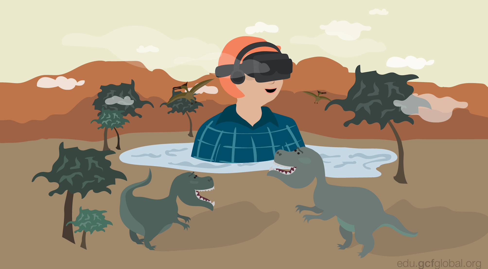

Innovación tecnológica
La innovación tecnológica son los resultados de nuevos desarrollos tecnologicos, nuevas conbinaciones de tecnologias
existentes. Hay diferentes areas en las que entra la innovación tecnológica, estas son las que veremos a continuación:
¿Qué es la innovación tecnológica?
Para entender qué es la innovación tecnológica, primero debemos saber qué es la innovación en sí. De acuerdo con el director de la Maestría en
Innovación para el Desarrollo Empresarial, doctor José Celso Rivas Vázquez, la innovación es utilizar el conocimiento para crear productos, servicios
o procesos que son nuevos para la empresa, o en su defecto mejorar los que ya existen.
Una vez entendiendo esto, podemos comprender realmente qué es la innovación tecnológica es el proceso en el cual la empresa crea un nuevo producto, servicio, proceso o modelo de negocio;
o mejora los que ya existen pero agregando la tecnología a su favor, es decir, utilizando la tecnología como vehículo innovador.
Sin embargo, la innovación tecnológica tiene varios tipos, los cuales conoceremos a continuación.
Tipos de innovación tecnológica
El doctor José Celso Rivas Vázquez señaló que el concepto de innovación tecnológica engloba muchas acciones y por ello se pueden diferenciar
en 3 tipos de innovación tecnológica.
- Innovación tecnológica incremental: es aquella en la que se aplican una serie de pequeñas mejoras o actualizaciones en productos, servicios, procesos o métodos
que ya existen en tu empresa, es la forma de innovación tecnológica más común que se puede encontrar en las empresas.
Por lo general, los cambios se implementan a través de la innovación incremental y se enfocan en mejorar la eficiencia de desarrollo, la productividad y la diferenciación
competitiva de un producto o servicio ya existente. Cabe señalar que este tipo de innovación no genera nuevos mercados, pues los clientes/usuarios ya conocen el producto o servicio
- Innovación tecnológica disruptiva: con este tipo de innovación se crean nuevos productos o servicios que transforman el mercado y generan una red de valor, lo cual ayuda a
tu empresa a liderar el sector en el cual incursiona.
De acuerdo con esto, podemos señalar que las empresas pequeñas o startups realizan una aplicación rápida y ágil a esta innovación, pues son quienes la impulsan.
- Innovación tecnológica radical: esta es aquella que combina el poder de la tecnología con un nuevo modelo de negocio. La razón de esta innovación es
que las empresas realizan innovaciones radicales que transforman la industria y el mercado en el que incursionan con el fin de progresar y responder de manera nueva a algún problema existente
posicionándose como líderes del mercado.
Este tipo de innovación tecnológica implica la creación de tecnologías, servicios y soluciones que dan luz a mercados completamente nuevos, es por ello que requiere
mucho más tiempo y de profesionistas competentes para implementarla.
¿Qué representa la innovación tecnológica para las empresas?
De acuerdo con Rivas Vázquez, la innovación tecnológica representa una mejora en la productividad, lo cual resalta los beneficios ya mencionados.
La implementación de la innovación tecnológica hace posible la aplicación de diversos softwares en las empresas los cuales les permiten controlar
operaciones en tiempo real, hacer seguimiento a los procesos, realizar una toma de decisiones mejor y más inteligente.
Así mismo, las empresas comprenden que la innovación tecnológica es una herramienta fundamental que deben utilizar para no quedarse atrás y poder crecer.
¿Cuál es la importancia de la tecnología en la vida cotidiana?
La tecnoligía es la unión del saber científico y las técnicas productivas, con el propóito del desarrollo de nuevas herramientas, nuevos materiales y, en consecuencia,
nuevas formas de comprender la realidad. Gracias a ella es posible deseñar y producir máquinas y sistemas, o controlar procesos complejos como nunca antes vio la humanidad.
La tecnología ha estado siempre presente en la historia, de una u otra manera, pero a partir de la Revolución Industrial del siglo XVIII y particularmente en el siglo XX su efecto comenzó
a alterar de manera drástica y acelerada la manera en que viven los seres humanos. La tecnología tiene muchos y muy diferentes efectos en al sociedad, muchos de ellos positivos, otros no tanto.
Así, por ejemplo, la gran mayoría de los aparatos que utilizamos a diario, desde televisores hasta computadoras, planchas y electrodomésticos de cocina, son fruto de un conjunto de saberes
científicos aplicados a la resolución de un problema doméstico o al aprovechamiento de posibilidades (económicas, sociales, culturales) que antes no existían.
De esta manera, la tecnología continuamente crea nuevos instrumentos para permitirle al ser humano llevar a cabo diferentes tabajos de un modo mas
IA (Inteligencia Artificial)
Para iniciar explicando el tema debemos primero saber qué es la IA. La IA pertenece al área de la informática, esta se enfoca en hacaer sistemas para realizar tareas
donde se necesite la inteligencia humana, como el aprendizaje, razonamiento y la percepción.
Estos sistemas pueden percibir su entorno, razonar sobre el conocimiento, procesar la información provenienete de los datos y tomar decisiones para lograr un objetivo.
Según la definición de la Comisió Europea existen dos tipos de IA:
- Software:
Asistentes virtuales, software de análisis de imágenes, motores de búsqueda o sistemas de reconocimiento de voz y rostro
- Inteligencia artificial integrada:
Robots, drones, vehículos autónomos o el Internet de las Cosas
Ahora que ya se definio que es la Inteligencia Artificial, podemos iniciar con el tema.
La IA ha empezado a tener más importancia en la actualidad. y justamente se ha mostrado prometedora en la innovación.
¿Cuál es el futuro de la inteligencia artificial?
Es importante reconocer que responder a esta pregunta resulta sumamente difícil. La verdad es que las posibilidades son vastas y, en muchos casos, inciertas. Sin embargo,
algunos expertos en el campo han realizado predicciones interesantes sobre lo que podemos esperar en los próximos años en relación con la IA.
Según Hugo Cen, "con los avances actuales, es seguro decir que la inteligencia artificial dará un salto aún mayor en los próximos cinco años. Incluso
pienso que su aceleración será tan rápida que puede superar nuestra comprensión sobre cómo integrarla en nuestras vidas".
Por otro lado, el Future of Humanity Institute de la Universidad de Oxford llevó a cabo un estudio en el que participaron 352 científicos e investigadores especializados en IA.
De acuerdo con sus conclusiones, es probable que presenciemos avances significativos en diversas áreas.
Por ejemplo, se espera que en 2024 la inteligencia artificial supere a la inteligencia humana en la traducción de idiomas, lo cual tendría un impacto enormemente positivo
en la comunicación global y en la eliminación de barreras lingüísticas.
Asimismo, se prevé que para 2026 las máquinas sean capaces de redactar comentarios de texto de mayor calidad que los alumnos de bachillerato. Esto plantea interrogantes
sobre el futuro de la educación y el papel de los humanos en la creación de contenido escrito.
En el ámbito comercial, se estima que en 2031 la inteligencia artificial superará a los vendedores humanos, lo cual plantea cuestionamientos sobre el futuro de
los empleos en el sector de ventas y cómo los humanos se adaptarán a esta nueva realidad.
Otro campo en el que la inteligencia artificial puede marcar una gran diferencia es el de la conducción. Según el estudio, a partir de 2027, se espera que
sea más seguro que los camiones sean conducidos por máquinas en lugar de personas, lo que reducirá significativamente la tasa de accidentes de tráfico y mejorará
la eficiencia en el transporte de mercancías.
Además, se predice que en 2057 las máquinas con inteligencia artificial podrán llevar a cabo investigaciones científicas por s&ia mismas. Esto podría
acelerar el progreso científico y abrir nuevas fronteras en el conocimiento humano.
El estudio también arrojó otras conclusiones interesantes, como que en 2049 las máquinas con inteligencia artificial podrán escribir best sellers y que, para 2053,
se espera que los robots tengan la capacidad de realizar cirugías en el campo de la medicina.
Aunque existen numerosas predicciones sobre el futuro de la inteligencia artificial, no podemos afirmar con certeza absoluta cuál seré su devenir.
Como bien señaló Cen, la inteligencia artificial es una moneda en el aire cuyo rumbo dependerá de las personas que la trabajen y regulen. "Gran parte del futuro
de la inteligencia artificial dependerá de quiénes inviertan en ella y con qué propósito lo hagan".

Ventajas de la inteligencia artificial
- Eficiencia y precisión:
Las máquinas programadas con algoritmos de IA pueden procesar grandes volúmenes de datos a una velocidad asombrosa.
Estas máquinas pueden aprender y adaptarse a través de datos y, por lo tanto, son menos propensas a cometer errores en comparación con los humanos.
Esto se traduce en decisiones y operaciones más rápidas y precisas, especialmente en áreas como diagnósticos médicos, análisis financiero y más.
- Versatilidad en múltiples sectores:
Las aplicaciones de Inteligencia Artificial no conocen límites. Desde la asistencia sanitaria y la educación hasta el comercio minorista y el transporte,
la IA está reformando la forma en que operan los sectores. Por ejemplo, los sistemas de recomendación en plataformas de streaming utilizan IA para analizar
las preferencias del usuario y sugerir contenido relevante.
- Automatización de tareas repetitivas:
Un gran número de trabajos involucra tareas monótonas y repetitivas. La IA, especialmente a través de la automatización robótica de procesos,
puede encargarse de estas tareas. Esto no solo ahorra tiempo, sino que también permite a los empleados centrarse en tareas más estratégicas y creativas.
- Disponibilidad constante:
A diferencia de los humanos, las máquinas no necesitan descansar. Ya sea para atención al cliente a través de chatbots o monitoreo de servidores, la
Inteligencia Artificial puede trabajar las 24 horas del día, los 7 días de la semana, garantizando una constante disponibilidad.
- Toma de decisiones basada en datos:
La Inteligencia Artificial permite un análisis más profundo de datos, lo que lleva a una toma de decisiones más informada. Las empresas pueden prever
tendencias, entender las preferencias del consumidor y tomar decisiones estratégicas basadas en análisis predictivo.
- Adaptabilidad:
A medida que la IA procesa más datos, aprende y se adapta. Esto permite que las soluciones de Inteligencia Artificial evolucionen con el tiempo, ofreciendo
resultados más refinados y precisos a medida que continúan aprendiendo.
Desventajas de la inteligencia artificial
- Impacto en el empleo:
Es indiscutible que la IA ha llevado a la automatización de ciertos empleos, particularmente aquellos que son altamente repetitivos. Esto ha creado inquietudes sobre el
desplazamiento laboral en algunos sectores.
- Costos iniciales elevados:
Implementar soluciones basadas en Inteligencia Artificial, desde la adquisición de hardware hasta la formación de personal, puede ser costoso. Estos altos costos
iniciales a menudo actúan como una barrera, especialmente para pequeñas empresas o startups.
- Falta de empatía y valores morales:
Aunque la IA puede imitar el aprendizaje y la lógica humanos, carece de emociones. Esto significa que no puede comprender o responder a las emociones humanas, lo que
puede ser crucial en profesiones como la atención médica o el asesoramiento.
- Dependencia tecnológica:
Una mayor dependencia de la IA puede resultar en vulnerabilidades, especialmente si hay fallos técnicos o ataques cibernéticos. Esta dependencia también
podría limitar las habilidades humanas a largo plazo.
10 ejemplos de que ya dependes de la IA en tu vida diaria
La idea de que los robots conquisten el mundo seguro que te parece algo salido de una película de ciencia ficción, o, como mínimo, algo que no será una realidad hasta,
por ejemplo, 2035. Pero la realidad es otra: el futuro es ahora.
Las soluciones de inteligencia artificial llevan décadas entre nosotros, y de modos mucho más mundanos que los coches sin conductor o la tecnología de reconocimiento facial.
La tecnología inteligente hace tantísimas cosas a nuestras espaldas, y que ni siquiera percibimos, que nos sorprendería descubrir lo complicadas que serían nuestras
vidas sin ella.
A continuación, te presentamos 10 maneras en las que utilizas a diario la IA y de las que quizás ni te hayas dado cuenta.
1. Asistentes de voz
En los hogares actuales, a la gente le encanta tener altavoces inteligentes y asistentes de voz. Según un reciente estudio de Nielsen, ya solo analizando el caso en los
Estados Unidos, el 24 % de los hogares cuentan con un altavoz inteligente como Google Home o Amazon Echo. Estos asistentes, que utilizan el procesamiento de
lenguajes naturales (PLN) para interpretar las órdenes por voz y responder a ellas, te permiten reproducir música con una orden, te recuerdan que tires la
basura o que les leas a tus hijos un cuento de buenas noches.
2. Smartphones
Los smartphones utilizan la IA de muchas maneras, así que seguro que la utilizas unas cuantas veces al día con solo un dedo. Siri y el Asistente de Google ya
son funciones conocidas de los teléfonos móviles que te permiten realizar búsquedas y peticiones por voz. Además, las mejoras inteligentes realizadas en los
"selfies", es decir, lo que ocurre cuando utilizas el modo retrato de tu iPhone, se efectúan gracias a la inteligencia artificial, que
identifica el enfoque adecuado.
3. Contenido en redes sociales
Tanto si adoras tuitear como si eres adicto a Instagram o un superusuario de Facebook, la mayoría de las notificaciones y los contenidos que
recibes a través de las redes sociales los selecciona la inteligencia artificial. Tu experiencia de usuario está hecha totalmente a tu medida.
Cada plataforma te ofrece la información que cree que buscas, para que así vuelvas a menudo, así que la próxima vez que te pases horas
leyendo novedades, ya sabrás por qué es.
4. Predictivo de Google
Si utilizas Google como buscador, seguramente te hayas percatado de que te ofrece recomendaciones para completar la consulta en función
del texto que hayas escrito. Los datos de esta búsqueda predictiva se presentan en base a los datos que Google recopila sobre ti (y sobre otros
usuarios) cuando navegas por internet como, por ejemplo, tu edad, ubicación y otros datos personales.
El buscador utiliza la IA para adivinar lo que puedes estar buscando, y así poder ofrecerte mejor información.
5. Recomendaciones de producto
Los vendedores como Amazon utilizan la inteligencia artificial para recopilar información sobre tus hábitos y preferencias de compra,
de modo que puedan personalizar tu experiencia online. Estos productos se recomiendan específicamente en función de tus hábitos y gustos,
para que sientas que estás comprando con la ayuda de un asistente personal online. No es de extrañar que volvamos a repetir la experiencia una y otra vez.
6. Atención al cliente
Los chatbots ayudan a miles de clientes de todo tipo de sectores a obtener respuesta a sencillas preguntas de soporte técnico o ayuda.
Por ejemplo, el chatbot de una entidad bancaria puede gestionar solicitudes y peticiones sencillas, como pueden ser mostrar el saldo disponible,
la transferencia de fondos y el cierre de cuentas. Los bots utilizan la IA para ayudar a los clientes a buscar datos, pero también ofrecen ventajas,
ya que pueden guardar los datos de uso de los clientes y ofrecer productos en función de sus necesidades específicas.
7. Recomendaciones musicales
¿A quién no le gusta tener listas de reproducción específicas según sus preferencias musicales?
La inteligencia artificial de servicios como Spotify y Alexa aprenden los diversos gustos y preferencias musicales de los usuarios de estas plataformas
para desarrollar mejores listas de reproducción. Datos como la duración de una canción, el tono o el género ayudan a estas plataformas a sugerir
canciones y artistas similares a sus usuarios.
8. Mapas e indicaciones
La IA también juega un papel importante en los sistemas de navegación. Tanto si utilizas Google como Apple Maps para obtener indicaciones, la
inteligencia artificial lee muchos puntos de datos para poder proporcionar información actualizada y en tiempo real sobre el estado del
tráfico a los usuarios. La navegación por voz ayuda a los conductores a seguir la ruta mas eficiente, e incluso algunas interfaces de
navegación proponen rutas a ubicaciones habituales.
9. Automatización del hogar
Entrar en casa sin llaves y encender las luces con tan solo usar la voz son situaciones que se están generalizando en los hogares actuales, y
todo gracias a la inteligencia artificial. Ahora existen protocolos enteros como Z-Wave que permiten a los propietarios diseñar su propio
Internet de las cosas (IoT, por sus siglas en inglés). Con el uso de "un tipo de ondas radio de baja frecuencia", los dispositivos
inteligentes para el hogar Z-Wave, pueden comunicarse entre sí y con otras aplicaciones para automatizar los procesos que antes
necesitaban un toque humano. Ya no hay necesidad de seguir peleándose con un confuso termostato programable:
¡deja que se programe solo!
10. Filtros de spam
La inteligencia artificial es de cada vez mayor utilidad a los proveedores de servicios de correo electrónico para filtrar el correo
basura, y los usuarios están encantados. Ahora, en lugar de tener hacer clic en un botón para informar acerca del correo basura,
Gmail y otros servicios de correo electrónico emplean el aprendizaje automático para distinguir entre los correos electrónicos que
son legítimos y aquellos que no lo son. Y, además, cada individuo tiene preferencias distintas, de modo que la IA le ayudará a
personalizar su bandeja de correo.
Formas en que la IA mejora la innovación
- Generar nueva ideas
La IA puede desarrollar nuevas ideas y oportunidades que las organizaciones no habrín considerado de otro modo, esto gracias a que pueden analizar grandes cantidades de datos
de diversas fuentes.
- Evaluación y selección de ideas :
Por el análisis de datos y predicción de tendencias en el mercado, la IA puede ayudar a saber si las ideas tendran éxito o requerirán un mayor perfeccinamiento.
- Realización de análisis predictivos :
Recopila datos que luego analiza para descubrir información y relaciones que puedan utilizarse para predecir acontecimientos futuros. Esto ayudando a las organizaciones para anticiparse
a lo que les espera e identificar posibles problemas.
- Mejorar el proceso de toma de decisiones :
La toma de decisiones se automatiza reduciendo el riesgo de sesgos que podrían haberse producido si se realizaba por humanos.
- Prototipos más rápidos :
Acelerar el proceso de cración de prototipos, permitiendo crear y probar rápidamente múltiples iteracione de diseño contando tambien con la reproducción
de circunstancias reales para experimentar con sus conceptos en un entorno digital antes de invertir en algo físico.
- Evaluación de riesgos :
Pueden detectar la probabilidad de distintos escenarios de riesgo, lo que permitirá enfoque informando a la gestión de riesgos, esto mejora sus posibilidades
de éxito a la hora de emprender nuevas ideas.
- Personalización de productos y servicios :
Adapta los productos, servicios y experiencias a las necesidades individuales de los clientes, esto puede mejorar la atisfacción y fidelidad del cliente.
- Optimización de recursos :
. Identifica áreas en las que se están
- Colaboración
- Mejora continua
Consulte para más información
Diseño 3D


La tecnología 3D es una herramienta que permite crear y modificar objetos tridimencionales. También puede utilizarse para crear imágenes realistas de
objetos que no existen en la vida real, como dinosaurios, planetas o personas.
El diseñador 3D suele seguir una serie de pasos relacionados con sus diferentes cometidos:
- Conceptualización/estudio del proyecto
Estudio de la idea/necesidad del cliente para determinar cómo llevarlo a cabo teniendo en cuenta sus particularidades ya que, por ejemplo, no es lo mismo
diseñar los personajes de un videojuego que un proyecto arquitectónico para construir una biblioteca.
- Boceto (sketching)
Se realiza sobre todo cuando no vienen definidas las especificaciones para tener un boceto de cómo puede quedar el proyecto.
- Fase de creación y diseño
Etapa en la que se realiza el proyecto utilizando diferentes softwares (como Blender, ZBrush, TinkerKard...). En esta fase los conocimientos técnicos deben
combinarse con la creatividad para diseñar, por ejemplo, simulaciones de obras públicas como un túnel o los escenarios de una serie de anime.
- Presentación al cliente
Para explicarle las funcionalidades y pormenores del diseño y determinar si se ajusta a sus demandas. En caso contrario, habrá que aplicar los cambios
necesarios.
Ámbitos de trabajo del diseñador 3D
El diseño 3D es una disciplina con muchas posibilidades más allá de la función básica de crear objetos en tres dimensiones.
Así, entre los tipos de diseño se puede diferenciar:
- Modelado 3D
Construcción de modelos y prototipos en 3D a partir de las líneas de un boceto o plano técnico. Se trata de un campo con diferentes técnicas y aplicaciones ya
que se puede emplear en el cine, televisión o videojuegos para crear personajes CGI (imágenes generadas por computadora), escenarios... En ingeniería se utilizar
para realizar simulaciones antes de ejecutar un proyecto real -como la construcción de un puente- para determinar su viabilidad.
- Renderizado
Procedente del término inglás render, es un proceso para generar imágenes en 3D consiguiendo que tengan la textura, los colores y los materiales iguales a los reales.
Se utiliza en el diseño de interiores, arquitectura, publicidad o videojuegos para, por ejemplo, idear escenarios fantásticos con gran realismo y precisión.
- Modelos por polígonos y curvas
En el primer caso, el sistema para diseñar imágenes en 3D utiliza polígonos (pirámides, cubos, dodecaedros...) mientras que, en el segundo, curvas definidas
matemáticamente. Sus aplicaciones son, sobre todo, en el sector de los videojuegos para diseñar personajes, edificios, criaturas fantásticas...
- Gráficos 3D
Representación en 3D de una serie de datos para mostrarlos de forma más atractiva y comprensiva. El diseñador 3D puede realizar este tipo de gráficos para
diferentes proyectos online como páginas web corporativas, vídeos publicitarios o aplicaciones móviles.
Tipos de diseños 3D
Los modelos 3D pueden dividirse en dos categorías universales:
- Solidos. Se representan como una roca pra definir el volumen. Se utilizan en los sectores de medicina e ingeniería.
- Carcasa. Representan la superficie de lo mostrado. Se trabaja con este tipo de diseños en ciencia ficción.
Para qué sirve el diseño 3D
- Ingeniería.
- Películas. Para impactar al público.
- Videojuegos. Permite crear personajes que realizan movimientos en el ángulo que el jugador quira.
- Industria médica. Representaciones interactivas de la anatomía.
- Arquitectura. Visualizar una construcción y poder detectar posibles errores o incongruencias
Ventajas de usar el diseño 3D
- Creación de diseños complejos. Permite crear, sin ayuda de terceros, componentes bajo demanda basados en diseños propios o de terceros.
- Personalización de objetos. Las impresoras 3D ofrecen la posibilidad de crear objetos únicos, personalizando cada creación.
- Reducción de costes. Desaparecen los gastos en moldes, herramientas complejas y materiales específicos. El único coste para crear un objeto impreso en
3D son las bobinas de los filamentos y el coste en electricidad.
- Reducción de los tiempos de producción. No es necesario el uso de intermediarios.
- Democratización de la tecnología. Gracias a la facilidad de uso, la fiabilidad y la reducción del precio de la impresión 3D, el acceso a esta
tecnología es mucho más fácil.
Desventajas de usar el diseño 3D
- El acabado de los modelos requiere trabajo. Los objetos impresos en 3D no tienen un acabado perfecto, suelen necesitar un pequeño
esfuerzo para eliminar impurezas e imperfecciones.
- Poco catálogode materiales. Las impresoras 3D suelen aceptar un número limitado de materiales. Aun así, es importante destacar que, esta tecnología
está en consante evolución y la llegada de nuevos modelos más polivantes es inminente.
- Derechos de autor. El desarrollo y perfeccionamiento de esta tecnología también facilitará la réplica de muchos objetos, por lo que los derechos
de intelectuales de los diseños originales se verán vulnerados y se volverá una situación difícil de controlar.
El futuro de la impresión 3D: ¿Qué podemos esperar?
Es difícil negar la influencia que la impresión 3D ha tenido en el mundo de la tecnología. Desde la revolución en la industria manufacturera hasta la creación
de prótesis médicas personalizadas, la impresión 3D representa un gran avance en la fabricación y personalización.
A medida que esta tecnología ha avanzado, muchos se preguntan: ¿cuál es el próximo paso? ¿Cómo será el futuro de la impresión
3D? ¿Qué nuevas aplicaciones surgirán?
En este post, exploraremos las posibles respuestas a estas preguntas y analizaremos algunas de las últimas tendencias y desarrollos en la impresión 3D.
La impresión 3D en la industria
Uno de los mayores avances de la impresión 3D ha sido en la industria manufacturera. Desde su inicio, la fabricación aditiva ha ofrecido muchas ventajas como reducir los costos
de producción y crear piezas más personalizadas. El futuro promete aún más posibilidades ya que se espera que la impresión 3D pueda
ser utilizada para producir piezas cada vez más grandes, complejas y precisas.
Una tendencia que se est&á volviendo cada vez más popular es la fabricación aditiva de metales. Un ejemplo, es la fabricación de piezas de motor para aviones.
La impresión 3D de piezas de metal más ligeras y resistentes podría reducir el peso de los aviones y por lo tanto, disminuir el consumo de combustible.
Además, esta tecnología permitiría imprimir piezas microscópicas que ningún otro método de fabricación ha sido capaz de hacer hasta ahora.
La impresión 3D en la medicina
La impresión 3D también está avanzando en el campo médico. La capacidad de la impresión 3D para crear piezas personalizadas y únicas hace que sea
ideal para la creación de prótesis médicas. Los avances futuros en este campo podrían llevar a la creación de prótesis más avanzadas y adaptativas
que imiten aún mejor la forma y la función de las extremidades naturales.
También hay investigación en curso sobre la posibilidad de imprimir órganos humanos. Si bien la impresión 3D de órganos aún causa controversia, algunos logros
notables se han logrado. Un equipo de científicos creó la primera oreja imprima en 3D en 2013, y se ha demostrado la capacidad para crear un corazón en miniatura usando
células humanas y la tecnología de impresión 3D.
La impresión 3D en la alimentación
Otro campo que está experimentando con la impresión 3D es el de la alimentación. Aunque suene raro, la impresión 3D podría revolucionar la forma en que
se producen nuestros alimentos. Con esta tecnología, podríamos imprimir alimentos de formas y sabores únicos.
Además, la impresión 3D podría ofrecer soluciones a problemas nutricionales y mejorar la seguridad alimentaria copiando las propiedades de los alimentos en
partes más fácilmente digeribles. Un ejemplo es que la incubadora YPrintFood ha desarrollado ya la impresión de alimentos para personas con disfagia o dificultada para
tragar alimentos sólidos de forma segura.
Estas son solo algunas de las áreas en las que la impresión 3D está evolucionando y mejorando. A medida que la tecnología continúe avanzando, es probable que surjan
nuevas aplicaciones y posibilidades que todavía no habían sido estudiadas. La capacidad de imprimir prácticamente cualquier cosa con esta tecnología nos ofrece un
futuro muy emocionante.
En el futuro, esperamos cambios radicales e incluso asombrosos en la forma en que utilizamos la impresión 3D, superando enormemente las expectativas
actuales para esta tecnología.
La impresora en el futuro se percibe no sólo como fábricas para metal. La nanotecnología permite pensar en el diseño de sanar criaturas enfermas a
nivel molecular y eso permitir designar nuevos ingredientes, arrugar la noción de que la comida es algo natural y has cambiado la "asunción"
de que los alimentos "son como son y se les acepta como tal".
Consulte para más información
Realidad virtual (VR)
¿Que es la realidad virtual?
Es la creación de un entorno o escenario ficticio o simulado con apariencia totalmente real y que nos permite trasladarnos a cualquier lugar o situación que queramos
como si nos creyésemos dentro de él, con la ilusión de estar dentro de este entorno. A través de un dispositivo como gafas o cascos de realidad virtual
podemos sumergirnos dentro de juegos donde nos creemos nuestros personajes o viajar por todo el mundo sin movernos del sofá del salón, pero a través de una
experiencia totalmente realista. Además, permite la utilización de otros dispositivos... Por ejemplo, puedes usar auriculares o espadas láser simuladas.
La realidad virtual puede ser confundida con la realidad auentada sin embargo son totalmente diferentes, por esa razón mencionaremos su principal diferencia:
Realidad virtual: Es una experiencia inmersiva en un entorno ficticioUtiliza una tecnología llamada "head tracking", en español "seguimiento
de cabeza", que te permite mirar alrededor de ese mundo virtual con tan solo girar tu cabeza.

Realidad aumentada: Toma imágenes digitales y las reproduce en el mundo real para crear una realidad mixta.
| Usos |
| Juegos | La experiencia puede ser mucho más real e inmersiva gracias a que nos metemos de lleno en la historia y no simplemente aparece en una pantalla. Una forma totalmente
diferente de enfocar el gaming. |
| Educación | Desde niños pequeños capaces de explorar cualquier parte del mundo sin moverse del aula hasta estudiantes universitarios que podrán
profundizar en todo tipo de campos: desde el aprendizaje de la medicina hasta el turismo, la tecnología, la ciencia o la robótica. |
| Entretenimiento | Hay muchos vídeos de realidad virtual con los que pasar un buen rato sin necesidad de controlar nada, solo moviéndonos a través de los distintos
escenarios. Hay todo tipo de experiencias disponibles en YouTube y paseos por lugares de series y películas, por el espacio, por parques de atracciones, simuladores o hasta
vídeos de National Geographic que nos permiten meternos de lleno en un documental de naturaleza. |
| Medicina | Los usos de la realidad virtual en medicina representan un potencial impresionante. Dentro de la medicina, las aplicaciones más representativas se realizan en las
siguientes áreas: Simuladores para formación médica, operaciones de cirugía, tratamiento de fobias y traumas psicológicos mediante
terapias de exposición y manejo del dolor mediante técnicas de distracción. |
| Entrenamiento | Permite entrenar a los profesionales militares en un entorno virtual donde pueden mejorar sus habilidades y capacidades sin los perjuicios de entrenar en un campo
de batalla. Se simulan diferentes tipos de situaciones y en una amplia variedad de terrenos y escenarios donde los reclutas viven una realidad totalmente envolvente con la misma eficacia
que un entrenamiento real y aumentando la frecuencia de ensayos al resultar éstos mucho menos costosos. |
| Turismo y Museografía | Esta tecnología acerca a los clientes con los destinos y productos turísticos además de potenciar su experiencia. La Realidad Virtual
no pretende sustituir el turismo ni los viajes físicos sino funcionar como un complemento que incentive a las personas a viajar.
En este sentido cabe destacar el enorme potencial de la VR en los Museos ya que permite solucionar algunos problemas de didáctica y comunicación que tienen sus responsables. |
10 Beneficios de la realidad virtual
Hoy en día, pensar en la realidad virtual como únicamente un medio de entretenimiento relacionada a los videojuegos es un tabú.
Tanto las industrias, como las áreas administrativas, ciencias y educación, han encontrado que hay mucho más allá de lo que se percibe
a simple vista a través de unos visores de VR.
- Prevención de riesgos, reducción de costos y optimización de procesos a través de la aplicación de simuladores en las industrias
manufactureras y de construcción.
- Training de personal para la toma de decisiones en entornos que facilitan el desarrollo de habilidades y competencias, reduciendo riesgos de equivocaciones futuras en
el desempeño laboral.
- En el ámbito educativo, representa un método de enseñanza que facilita la retención del conocimiento y fomenta el auto-aprendizaje.
- Mejora de las herramientas de venta y estrategias de marketing, que produce un mayor nivel de engagement y compromiso por parte del cliente.
- Dentro del área médica la realidad virtual puede utilizarse para ayudar a los pacientes a recuperarse de ataques cardíacos y otras lesiones,
registrando el nivel de recuperación del paciente.
- Conveniencia en el trabajo, ya que puede ahorrar tiempo y dinero a las organizaciones al reducir al mínimo costos relacionados a traslados y la posibilidad
de realizar tareas en un mismo sitio.
- Evaluación precisa de los diseños antes de ser elaborados por arquitectos.
- Facilidad e innovación en el mercado virtual y compras por internet.
- Conferencias virtuales que reúnen en un mismo espacio digital a diferentes personas sin importar su localización real.
- Desarrollo de experiencias únicas para mostrar espacios inmersivos dentro del sector turismo e inmobiliaria.
¿Cómo se usará la realidad virtual en el futuro?
Actualmente, el mercado demanda aplicaciones que van más allá del ocio, el turismo y el marketing, además de ser más asequibles para los usuarios.
Por ello, es probable que experimentemos la realidad extendida en formas que aún son impensables.
Gracias a los avances tecnológicos que se esperan, tendremos una RV y AV más rápida, ligera y asequible.
Además, los próximos smartphones con mejoras en cámaras y procesadores, así como las redes 5G, nos permitirán disfrutar de experiencias
inmersivas mucho más sofisticadas desde cualquier lugar.
Algunos de los avances claves que marcarán el futuro de las tecnologías inmersivas serán:
- LiDAR y sus creaciones más realistas para nuestros teléfonos móviles.
- Los dispositivos de realidad virtual y aumentada serán más pequeños, más ligeros e incorporarán más funciones.
- Van a surgir nuevos accesorios como botas robóticas para profundizar aún más la experiencia.
- Habrá una gran demanda de chips RA/RV.
- Se irá un paso más allá de los guantes hápticos como trajes hápticos de cuerpo entero.
- La realidad extendida se dedicará al aprendizaje, entrenamiento y tratamientos sanitarios.
- No habrá necesidad de descargar apps gracias al 5G y la WebVR.
- Deportes y eventos inmersivos.
¿Cómo se espera que evolucione el mercado de VR en los próximos años ?
Según las previsiones de la industria, se espera que el mercado global de visores de VR experimente un crecimiento
significativo en los próximos años, lo que indica un creciente interés en estos dispositivos.
Con el avance tecnológico y el aumento de la conciencia del consumidor, el mercado de VR está preparado para una expansión continua.
La tecnología de realidad virtual (VR), una realidad simulada por computadora que crea un entorno artificial, se utiliza cada
vez más en sectores como la educación, los juegos y las aplicaciones de inteligencia artificial. Este multimedia inmersivo
ofrece un mundo virtual en 3D, mejorando las experiencias de aprendizaje y los entornos de juego. La integración de la IA enriquece aún más el entorno virtual.
El desarrollo del metaverso, un espacio colectivo compartido que combina realidad virtual, realidad aumentada, realidad mixta e
interfaz cerebro-computadora, promete una experiencia interactiva de realidad virtual. El mercado de la realidad virtual,
segmentado por hardware, usuario final y geografía, está dominado por el sector de los juegos, con Norteamérica a la
cabeza debido a numerosas empresas emergentes que se centran en tecnologías de realidad generada por computadora.
Análisis de participación y tamaño del mercado
de realidad virtual tendencias de crecimiento y pronósticos (2024-2029)
Desventajas de la realidad virtual
- Costos. Un desarrollo de realidad virtual, puede llegar a ser un tanto costoso y no todas las empresas están dispuestas a pagarlo
o simplemente, no tienen los recursos para hacerlo.
- La tecnología sigue siendo experimental. Aunque la tecnología de realidad virtual se utiliza en varios campos,
sigue siendo experimental. No ha sido completamente aceptada ni tampoco se ha desarrollado a su máximo. La realidad virtual
tiene muchos contras que no la hacen totalmente aceptable.
- Confusión El usuario puede llegar a confundirse hasta tal punto de no diferenciar lo real de lo ficticio.
Problemas de seguridad y privacidad relativos a la relidad aumentada
La privacidad es el principal problema de la realidad virtual. Un problema esencial de la privacidad en la realidad virtual es la inmensa índole personal de los datos recopilados.
Por ejemplo, la información biométrica, como el análisis del iris o la retina, las huellas dactilares y de las manos,
la geometría facial y espectogramas del habla. A continuación se incluyen algunos ejemplos:
- Seguimiento de los dedos:
En el mundo virtual, un usuario puede usar las manos de la misma manera que lo haría en el mundo real, por ejemplo, puede escribir el código en un teclado
virtual con los dedos. Sin embargo, esto significa que el sistema registra y transmite los datos de seguimiento de los dedos que
muestran la escritura del PIN. Si un atacante consigue esos datos, podrá recrear el PIN de un usuario.
- Seguimiento ocular:
Algunos cascos de realidad virtual y realidad aumentada incorporan el seguimiento ocular. Estos datos pueden beneficiar a los actores maliciosos.
Saber exactamente qué es lo que mira un usuario puede ser información valiosa para un atacante, ya que si la consigue puede recrear las acciones del usuario.
Según los expertos, otros problemas de la realidad virtual son:
- Posibilidad de crear adicción.
- Efectos en la salud: mareos, náuseas o desorientación (tras un uso prolongado de la realidad virtual).
- Pérdida del contacto social.
Consulte para más información
Nanotecnología
Por definición, la Nanotecnología, es el estudio y desarrollo de sistemas en escala nanométrica, "nano" es un prefijo del Sistema Internacional de Unidades que viene
del griego νάνος que significa enano, y corresponde a un factor 10^-9, que aplicado a las unidades de longitud, corresponde a una mil millonésima parte de un metro
(10^-9 Metros) es decir 1 Nanómetro.
En esta escala se observan propiedades y fenómenos totalmente nuevos, que se rigen bajo las leyes de la Mecánica Cuántica, estas nuevas propiedades son las que
los científicos aprovechan para crear nuevos materiales (nanomateriales) o dispositivos nanotecnológicos.
La Nanotecnología promete soluciones a múltiples problemas que enfrenta actualmente la humanidad, como los ambientales, energéticos, de salud (nanomedicina),
y muchos otros, sin embargo estas nuevas tecnologías pueden conllevar a riesgos y peligros si son mal utilizadas.
La nanotecnología es la manipulación de la materia a una escala casi atómica para crear nuevas estructuras, materiales y aparatos. Esta tecnología promete avances
científicos en muchos sectores como la medicina, productos para el consumidor, energía, materiales y fabricación. La nanotecnología no está definida concretamente,
aunque en términos generales abarca estructuras, aparatos y sistemas diseñados que tienen una escala de entre 1 y 100 nanómetros. Los materiales de este tamaño presentan
propiedades únicas que afectan las reacciones físicas, químicas y biológicas. El estudio, el desarrollo y la utilización de estas propiedades es parte esencial de
las nuevas tecnologías.
Al igual que ocurre con toda nueva tecnología, lo más probable es que la exposición más temprana y extensa a los riesgos tienda a ocurrir en el sitio de trabajo.
Los trabajadores que laboran en industrias relacionadas con la nanotecnología enfrentan una posible exposición a materiales únicos creados artificialmente con tamaños,
formas y propiedades físicas y químicas novedosas. Los riesgos de salud ocupacional asociados a la fabricación y al uso de nanomateriales no están claros del todo.
En la actualidad se dispone de información mínima sobre las rutas predominantes de exposición, los niveles de exposición potenciales y la toxicidad material de los
nanomateriales.
Los estudios indican que las nanopartículas de baja solubilidad son más tóxicas que las partículas de mayor tamaño cuando se comparan con base en su masa.
Existen indicaciones sólidas de que el área de la superficie de la partícula y su composición química son los factores responsables de la respuesta observada
en cultivos celulares y en animales. También hay indicativos de que las nanopartículas pueden penetrar a través de la piel o pasar del sistema respiratorio a otros órganos.
Se continúa realizando investigaciones para entender la forma en que estas propiedades especiales pueden causar efectos específicos en la salud.
 Nanotecnologia
Nanotecnologia
Funciones de la nanotecnología
A continuación, se presentan algunas de las funciones más importantes de la nanotecnología:
- Desarrollo de materiales y dispositivos de alta resistencia y ligereza:
La nanotecnología permite crear materiales y dispositivos con propiedades únicas que los hacen más resistentes, ligeros y duraderos que los materiales convencionales.
- Aplicaciones médicas:
La nanotecnología se está utilizando para desarrollar sistemas de entrega de medicamentos más efectivos, detectores de enfermedades, implantes y prótesis,
y dispositivos para el diagnóstico y tratamiento de enfermedades.
- Energía renovable:
La nanotecnología está siendo usada para desarrollar tecnologías de energía renovable, como células solares, baterías y supercondensadores
más eficientes y económicos.
- Electrónica y computación:
La nanotecnología está permitiendo el desarrollo de dispositivos electrónicos más pequeños y potentes, como transistores, chips de memoria y pantallas
de visualización.
- Aplicaciones medioambientales:
La nanotecnología está siendo empleada para desarrollar tecnologías de purificación de agua y aire, así como para la eliminación de contaminantes.
- Agricultura y alimentación:
La nanotecnología se está usando para desarrollar tecnologías de conservación de alimentos, sensores para la detección de patógenos en los alimentos
y sistemas de liberación controlada de nutrientes para la agricultura.
Estas son solo algunas de las funciones de la nanotecnología, pero hay muchas otras áreas donde esta disciplina puede tener un gran impacto, como la industria aeroespacial,
la construcción y la manufactura en general.
Tipos de nanotecnología
La nanotecnología puede clasificarse en cuatro tipologías dependiendo de dos factores: forma de proceder y naturaleza del medio donde se trabajan.
A continuación te lo explicamos con detalle.
- Top-down: Las estructuras se miniaturizan, es decir, se hacen más pequeñas. Se adaptan a la escala nanométrica, de 1 a 100 nanómetros.
Es la más frecuente en la actualidad. Un ejemplo es el sector de la electrónica con los elementos de ordenadores, smartphones,...
- Bottom-up: El proceso es el contario al top-down. En otras palabras, se parte de una estructura nanométrica y se construye un elemento mayor.
- Seca: Es la utilizada en la fabricación de estructuras en materiales como el carbón, diferentes metales,... que no funcionan con humedad.
- Húmeda: Al contario que la seca, es la que utiliza elementos que funcionan en un entorno acuoso. Por ejemplo, el material genético, membranas,...
Aplicaciones para los tipos de nanotecnología por sectores
Ciertamente, resulta impresionante imaginar como algo tan pequeño transformar nuestra realidad. Pero, ¿cómo?
¿En qué sectores puede aplicarse la nanotecnología? ?Existen inconvenientes en su utilización? ¿Puede haber riesgos asociados? Te lo contamos:
| Aplicaciones |
| Electrónica | Puede que este sea el sector que primero aparece en el imaginario colectivo al hablar de tipos de nanotecnología.
Pero no es el único, aunque sí uno de los más importantes en la actualidad. En este sentido, la mejora de las propiedades en los
materiales permite fabricar dispositivos y accesorios más pequeños, rápidos, resistentes, eficientes,... |
| Sector energético | Permite reducir costes, multiplicar la potencia de receptores de energía como molinos eólicos, optimizar el rendimiento de combustibles,
ahorro de energía, entre otras cuestiones. En definitiva, la nanotecnología y los nanomateriales son claves para seguir avanzando hacia la generación y consumo de
energía de forma sostenible y responsable. |
| Ámbito médico | Las propiedades de los nanomateriales permiten que los profesionales de la medicina puedan optimizar su labor.
Es decir, ayuda a ofrecer diagnósticos precoces, tratar enfermedades graves como el cáncer o neurodegenerativas.
Incluso, se utilizan en productos farmacéuticos que utilizamos frecuentemente como las cremas de protección solar. |
| Producción y seguridad alimentaria | Permite la detección de patógenos en los alimentos para reducir los riesgos para los consumidores.
Además, puede ayudar a aumentar la resistencia de los productos para mejorar su distribución, por ejemplo. |
| Industria textil | La aplicación de la nanotecnolía a la industria textil permite mejorar los tejidos para que no se arruguen o no se manchen.
Igualmente, contribuye a encontrar materiales más resistentes o ligeros para vestimentas específicas como los equipamientos deportivos. |
Posibles riesgos de los diferentes tipos de nanotecnología
No todo puede ser positivo, la nanotecnología entraña algunos riesgos. Su uso indebido puede ser el detonante para problemas de grandes dimensiones.
Ciertamente, los beneficios son muchos más que los inconvenientes. Aunque no está demás conocerlos para tratar de evitarlos o minimizarlos en la medida de lo posible:
- Problemas medioambientales: modificar los átomos o moléculas de una materia podría dar lugar a nuevas toxinas perjudiciales para el entorno.
- Destrucción de empleo: como la mayoría de tecnologías, su avance pone en riesgo puestos de trabajo que quedan obsoletos.
En este caso, los nuevos materiales podrían cambiar los procesos y acabar con tareas habituales. Sin embargo, crearía también nuevas oportunidades.
- Dificulta la seguridad: la nanotecnología podría ayudar al espionaje, a la creación de armas más eficaces, u otras cuestiones.
Es decir, herramientas que comprometen la integridad de la sociedad y contribuyen a los conflictos armados.
Áreas de aplicación en los que la nanotecnología ya ha desarrollado productos:
Medicina
En la medicina, la nanotecnología se está utilizando para desarrollar nanomateriales y dispositivos que pueden ser utilizados para diagnosticar y tratar enfermedades de manera
más precisa y eficiente. Algunos ejemplos de aplicaciones de la nanotecnología en la medicina son:
- Nanomedicamentos: medicamentos que utilizan nanomateriales para mejorar su eficacia y reducir sus efectos secundarios.
- Nanosensores: dispositivos que pueden detectar enfermedades a nivel molecular y ayudar a diagnosticar enfermedades de manera temprana.
- Nanodispositivos: dispositivos que pueden ser utilizados para tratar enfermedades en el cuerpo, como nanocápsulas que liberan medicamentos de manera controlada.
Por ejemplo, un ejemplo de nanomedicamento es la nanocápsula de docetaxel, un medicamento utilizado para tratar el cáncer de mama. La nanocápsula de docetaxel
está formada por una capa de nanopartículas de polímero que rodea el medicamento. Esta capa protege al medicamento y permite que se libere de manera controlada en el
cuerpo, lo que ayuda a mejorar su eficacia reduciendo su toxicidad y sus efectos secundarios.
Energía
En el campo de la energía, la nanotecnología se está utilizando para desarrollar nanomateriales que pueden mejorar la eficiencia de las baterías y los paneles solares.
Algunos ejemplos de cómo se está aplicando la nanotecnología en la energía son:
- Nanomateriales para baterías: nanomateriales como nanotubos de carbono se están utilizando para mejorar la capacidad y la durabilidad de las baterías.
- Nanomateriales para paneles solares: nanomateriales como nanopartículas de silicio se están utilizando para mejorar la eficiencia de los paneles solares y
aumentar su capacidad de producir energía.
- Nanomateriales para almacenamiento de energía: nanomateriales como nanotubos de carbono se están utilizando para desarrollar nuevos tipos de baterías y
dispositivos de almacenamiento de energía.
Una empresa que ha desarrollado un producto de nanotecnología para la energía es NanoTechLabs. Uno de los productos desarrollados por esta empresa es una capa de
nanotubos de carbono que se puede aplicar a las baterías para mejorar su capacidad y durabilidad. Esta capa de nanotubos de carbono permite que las baterías carguen y
descarguen más rápido y con mayor eficiencia, lo que las hace más duraderas y capaces de producir más energía.
Ingeniería informática
En el campo de la ingeniería informática, la nanotecnología se está utilizando para desarrollar nanomateriales y dispositivos que puedan mejorar la
eficiencia y la velocidad de los sistemas informáticos. Algunos ejemplos de cómo se está aplicando la nanotecnología en la informática son:
- Nanomateriales para la fabricación de chips: nanomateriales como nanotubos de carbono se están utilizando para fabricar chips más pequeños y
eficientes.
- Nanosensores: dispositivos que pueden detectar señales eléctricas a nivel molecular y ayudar a mejorar la velocidad y la eficiencia de los sistemas
informáticos.
- Nanodispositivos: dispositivos que pueden ser utilizados para almacenar y procesar información a nivel molecular, lo que permite una mayor capacidad de almacenamiento y
una mayor velocidad de procesamiento.
También las grandes multinacionales apuestan por el desarrollo de productos nanotecnológicos. Intel Nanotech Labs, por ejemplo, es un laboratorio de investigación
y desarrollo de Intel Corporation, una empresa líder en la fabricación de chips y tecnología de la información. Intel Nanotech Labs ha desarrollado varios
productos de nanotecnología para la fabricación de chips, incluyendo materiales de empaquetado más resistentes y duraderos, y capas de nanotubos de carbono que mejoran la
velocidad y la eficiencia de los chips.
Industria alimentaria
En la industria alimentaria, la nanotecnología se está utilizando para desarrollar nanomateriales y dispositivos que puedan mejorar la calidad, la seguridad y la eficiencia de los
alimentos.
Algunos ejemplos de cómo se está aplicando la nanotecnología en la industria alimentaria son:
- Nanomateriales para empaquetado: nanomateriales como nanofibras de vidrio se están utilizando para fabricar materiales de empaquetado que son más resistentes,
impermeables y duraderos.
- Nanosensores: dispositivos que pueden detectar contaminantes y bacterias en los alimentos y ayudar a garantizar su seguridad.
- Nanomateriales para fortificar los alimentos: nanomateriales como nanopartículas de hierro se están utilizando para fortificar los alimentos con nutrientes
esenciales.
Una empresa que ha desarrollado productos de nanosensores para la industria alimentaria es NanoScent. Esta empresa ha desarrollado un nanosensor que se puede utilizar para detectar
contaminantes y bacterias en los alimentos de manera rápida y precisa. Este nanosensor utiliza tecnología de nanotecnologí para detectar la presencia de contaminantes
y bacterias a nivel molecular, lo que permite identificarlos de manera temprana y evitar posibles problemas de seguridad alimentaria.
Industria textil
En la industria textil, la nanotecnología se está utilizando para desarrollar nanomateriales y dispositivos que puedan mejorar la calidad, la comodidad y la durabilidad de la
ropa y otros productos textiles.
Algunos ejemplos de cómo se está aplicando la nanotecnología en la industria textil son:
- Nanofibras: nanomateriales como nanofibras de vidrio o de polímeros se están utilizando para fabricar ropa y otros productos textiles más resistentes
y duraderos.
- Nanofiltración: nanomateriales como nanofibras de polímero se están utilizando para fabricar tejidos que puedan bloquear los rayos UV y proteger la piel
de los daños causados por
el sol.
- Nanotratamiento: nanomateriales como nanopartículas de plata se están utilizando para tratar la ropa y otros productos textiles, lo que les confiere propiedades
antimicrobianas y ayuda a prevenir el olor y el crecimiento de bacterias.
Una empresa que ha desarrollado productos de nanotecnología para la industria textil es NanoTex. Esta empresa ha desarrollado un nanofibra que se puede aplicar a la
ropa y otros productos textiles para mejorar su resistencia y su durabilidad.
La nanofibra utiliza nanomateriales como nanofibras de vidrio o de polímero para mejorar la resistencia y la durabilidad de la ropa y otros productos textiles.
Esto permite que la ropa sea más cómoda y duradera, y ayuda a mantener su forma y su color original por más tiempo.
Aplicaciones de la nanotecnología en la vida cotidiana
Bloqueador solar
Con el fin de hacer los protectores solares más efectivos, se han agregado nanoparticulas a ellos. Especialmente, han añadido dióxido de titanio y óxido de zinc,
que son altamente efectivas para bloquear la radiación UV. Esto ha permitido que los protectores solares no sean tan gruesos y pesados, sino que tengan un aspecto más transparente.
Además, protegen mejor a la piel.
Ropa
La ropa inteligente también puede ser mejorada con nanotecnología. Por un lado, se puede incorporar nanoparticulas de sílice para crear telas que repelan el agua y
otros líquidos. Estas se pueden agregar al incorporarlas en la tela o pulverizarla sobre la superficie.
Además, se puede crear ropa antimicrobiana. Con nanopartículas de plata se puede destruir cualquier patógeno, lo cual es muy útil para las pieles sensibles.
Esto lo están aprovechando, sobre todo, marcas de ropa deportiva o de ropa interior.
Muebles
Con propiedades similares a la de la ropa, la nanotecnología puede ser utilizada también en muebles. Estos se pueden tapizar con nanosistemas que otorgen impermeabilidad
y resistencia a manchas; o, incluso, que reduzca su inflamabilidad hasta un 35 %.
Asimismo, se pueden aplicar en camas y lencería de cama. El tejido es de algodón en las capas exteriores, y en su interior tiene una diminuta red de nanofibras que no permite que
ningún ácaro pueda cruzarlo. Así se protegen la almohada y colchón.
Aplicaciones de la nanotecnología en la agricultura
Palguicidas
Entre los usos y aplicaciones de la nanotecnología, la agricultura ocupa un lugar especial. Lo cierto es que esta diminuta tecnología podría ayudar a
resolver algunos de los grandes problemas del sector. El manejo de enfermedades es uno de ellos.
La nanotecnología podría generar alternativas verdes para el manejo de enfermedades fitopatogénicas por medio de nanopartículas metálicas
o la incorporación de microorganismos benéficos y matrices zeolíticas. Estas últimas pueden actuar como portadores de los organismos y ser liberados
gradualmente. Además, incrementan la dispersión y humectabilidad de las formulaciones agrícolas. Es decir, pueden llegar a más rincones, liberarse gradualmente
y permanecer más tiempo en las plantas.
Los plaguicidas tienen distintas categorías: pueden ser herbicidas para destruir malezas; insecticidas para el control de plagas; o funguicidas y bactericidas
contra el ataque de microorganismos. La nanotecnología permite atacar cada uno de esos campos con la ventaja de generar una liberación más lenta y controlada.
De esta forma, aumenta su nivel de acción y se requiere menos productos.
Nanoherbicidas
Los nanoherbicidas además tienen la ventaja adicional de que se dirigen a un público específico. Por lo tanto, se evita dañar a las plantas cultivadas.
Su uso también permite reducir la contaminación ambiental provocada por residuos industriales y productos químicos agrícolas. En este caso se
usarían nanopartículas metalicas y nanoencapsulados. La ventaja de estos últimos es que facilitan la degradación de los herbicidas, lo que reduce su impacto
sobre el suelo.
La tecnología todavía no se ha implementado a gran escala, pero existen algunos avances e investigaciones. Ya se han hecho algunos experimentos. Por ejemplo,
una prueba en un cultivo de rosas demostró que el sílice puede controlar el pildéu polvoso de la Podosphaera pannosa. En la búsqueda de
alternativas, rosearon una solución de 100 mg/L de sílice a plantas de cuatro fenotipos de rosa. Luego, se rociaron con la bacteria. La investigación demostró
que aquellas que tenían sílice fueron hasta cuatro veces más resistentes a la enfermedad.
Fertilizantes y crecimiento vegetal
Mejorar la capacidad de los cultivos, la absorción de nutrientes, la resistencia a cambios climáticos e incrementar la producción es esencial para mejorar el sector.
Para ello, se necesita alimentar correctamente a las plantas. Sin embargo, el uso contínuo de los fertilizantes puede afectar los suelos y aguas subterráneas,
además de sus altos costos.
Por ello, entre las futuras aplicaciones de la nanotecnología en la agricultura también podemos encontrar el potenciar los cultivos. Esto se puede lograr al introducir
nanoparticulas derivadas del carbono mediante aspersiones o aplicación directa en la raíz. En el primer caso, las nanopartículas se introducen a través
de los estomas de la planta. En el segundo, se introduce el producto directamente en toda la planta.
Este tipo de nanofertilizantes se fabrican a base de fosforo encapsulado con biopolímeros para liberar directamente la sustancia activa. La ventaja es que se puede
realizar de manera controlada, por lo que tendrá un mayor efecto.
En el año 2000 ya se estaban haciendo pruebas al respecto. Ese año se comprobó que si se siembran semillas de tomate con nanotubos de carbón, estos pueden
penetrar en la cubierta de la semilla. Como consecuencia, se produce un incremento en el crecimiento de las plantas y mejor absorción de agua.
Diagnóstico de enfermedades
Las nuevas técnicas de diagnóstico apuntan a detectar enfermedades en sus estados iniciales. Por ello, se usan técnicas como ELISA (enzyme-linked immuno sorbent assay),
RT-PCR (Reacción en cadena de la polimerasa en tiempo real) y los sensores hiperespectrales. Sin embargo, estas técnicas no son perfectas y pueden fallar
debido al tamaño de las sustancias del sensor para detectar y cuantificar. Esto se debe a que los sistemas biológicos funcionan con proteínas motoras, encimas
y ácidos nucleicos en procesos vitales.
Aquí es donde surge otra de las aplicaciones de la nanotecnología. Para poder identificar de manera más exacta las enfermedades se necesitan biosensores,
dispositivos autónomos que se integran elementos biológicos inmovilizados para reconocer su analito (el sustrato de una encima, ADN complementario o antígeno) y
un elemento de transducción que convierte la señal bioquímica resultante en una señal electrónica.
Estos biosensores podrían convertirse en nanobiosensores que detecten patógenos y otros contaminantes en moléculas. Así se podría aumentar
la seguridad en la fabricación de productos alimenticios. ¿Cómo? Los daños en los alimentos son detectados con los nanosensores, por ejemplo, con un arreglo
de miles de nanopartículas diseñadas para dar fluorescencia en diferentes colores al contacto con patógenos de los alimentos. De esta forma, pueden identificar
tempranamente enfermedades u otros problemas en la planta.
Manejo poscosecha
Una vez termina el cultivo y se cosechan los alimentos, estos siguen con su ciclo de vida. Es decir, su metabolismo continúa funcionando y, al no tener los nutrientes y
condiciones para sobrevivir, comienza a deteriorarse. Durante los procesos de transporte y almacenamiento, se van perdiendo agua y respiración, que se traduce en una
pérdida de características nutricionales, organolépticas y apariencia. Por ello, las atmosferas modificadas, bajas temperaturas y empaques resultan importantes.
Se calcula que se producen pérdidas cercanas al 10 % de los alimentos en la etapa de poscosecha, especialmente por los ataques de insectos. Por ello, se están
produciendo elementos nanoestructurados para reducir estas pérdidas. Por ejemplo, en 2010 se produjo un insecticida a partir de alúmina nanoestructurada (ANE),
se cree que éste podría actuar sobre la carga electrostática de partículas y fenómenos de triboelectrificación a través de la
absorción de las ceras cuticulares de los insectos. En otras palabras, causa la deshidratación de los insectos.
No obstante, las nanotecnología no sólo se puede usar como insecticida. Además, puede ayudar a controlar el déficit hídrico en las flores,
por ejemplo. Para ello, se utiliza pulsos de una hora con nanoparticulas de plata que han ayudado a extender la vida de las flores gracias a su efecto antibacterial y al reducir
la tasa de transpiración.
Consulte para más información
La nube

¿Qué es la nube?
"La nube" hace referencia a los servidores a los que se accede a través de Internet, y al software y bases de datos que se ejecutan en esos servidores.
Los servidores de la nube están ubicados en centros de datos por todo el mundo. Con la informática en la nube, no es necesario que los usuarios y las empresas
gestionen los servidores físicos ni que ejecuten aplicaciones de software en sus propios ordenadores.
La nube permite a los usuarios acceder a los mismos archivos y aplicaciones casi desde cualquier dispositivo, ya que los procesos informáticos y de
almacenamiento tienen lugar en servidores en un centro de datos, y no de forma local en el dispositivo del usuario. Por ello, un usuario puede iniciar sesión
en su cuenta de Instagram con un teléfono nuevo después de que se le haya averiado el anterior y seguirá teniendo acceso a su cuenta de siempre,
con sus fotos, vídeos y el historial de conversación. Funciona igual con proveedores de correo electrónico en la nube como Gmail o Microsoft Office 365, y con
proveedores de almacenamiento en la nube como Dropbox o Google Drive.
Para las empresas, el cambio a la computación en la nube supone menos gastos generales y de TI: por ejemplo, ya no tendrán que actualizar y mantener sus propios
servidores, ya que su proveedor de la nube lo hará por ellos. Esto tiene un especial impacto en las pequeñas empresas que no tienen la capacidad de pagar su propia
infraestructura interna, pero que pueden externalizar sus necesidades de infraestructura por poco dinero mediante la nube. Además, la nube puede facilitar que las
empresas operen a nivel internacional, ya los empleados y clientes pueden acceder a los mismos archivos y aplicaciones desde cualquier lugar.
¿Por qué se llama "la nube"?
"La nube" surgió como un término de jerga en el sector tecnológico. En los albores de Internet, los diagramas técnicos solían representar
con una nube a los servidores y a la infraestructura de red que formaban Internet. A medida que más procesos informáticos se iban trasladando a esta parte de infraestructura
y servidores de Internet, se empezó a hablar de trasladar a "la nube" como una forma abreviada de expresar el lugar en el que se llevaban a cabo los procesos informáticos.
Hoy en día, "la nube" es un término ampliamente aceptado para este tipo de computación.
Comprende cómo funciona la computación en la nube
Los modelos de servicio de computación en la nube se basan en el concepto de compartir información, software y recursos de procesamiento bajo demanda en Internet.
Las empresas o las personas pagan para acceder a un grupo virtual de recursos compartidos, incluidos los servicios de procesamiento, almacenamiento y herramientas de redes,
que se encuentran en servidores remotos que son propiedad de los proveedores de servicios y son administrados por ellos.
Una de las muchas ventajas de la computación en la nube es que solo pagas por lo que usas. Esto permite que las organizaciones escalen con mayor rapidez y
eficiencia sin la carga de comprar y mantener sus propios centros de datos físicos y servidores.
En términos más simples, la computación en la nube usa una red (por lo general, Internet) para conectar a los usuarios con una plataforma en la nube en la que solicitan y
acceden a servicios de computación alquilados. Un servidor central controla toda la comunicación entre los dispositivos y los servidores del cliente para facilitar el
intercambio de datos. Las funciones de seguridad y privacidad son componentes habituales para proteger esta información.
Cuando se adopta la arquitectura de computación en la nube, no hay una solución universal. Lo que funciona para otra empresa puede no satisfacer tus necesidades ni las de tu empresa.
De hecho, esta flexibilidad y versatilidad es uno de los sellos distintivos de la nube, lo que permite a las empresas adaptarse con rapidez a mercados o métricas cambiantes.
Existen tres modelos diferentes de implementación de computación en la nube: nube pública, nube privada y nube híbrida.
- Las nubes públicas se ejecutan mediante proveedores de servicios en la nube externos. Ofrecen recursos de procesamiento, almacenamiento y red a travé
de Internet, lo que permite que las empresas accedan a recursos compartidos bajo demanda en función de sus requisitos y objetivos comerciales únicos.
- Las nubes privadas las compila, administra y posee una sola organizacióon y se alojan de forma privada en sus propios centros de datos, lo que comúnmente se
conoce como "local". Proporcionan mayor control, seguridad y administración de datos, a la vez que permiten que los usuarios internos se beneficien de un conjunto
compartido de recursos de procesamiento, almacenamiento y red.
- Las nubes híbridas combinan modelos de nube pública y privada, lo que permite a las empresas aprovechar los servicios de nube pública y mantener las
capacidades de seguridad y cumplimiento que suelen encontrarse en las arquitecturas de nube privada.
- La multinube es un tipo de implementación de nube que implica el uso de varias nubes públicas. Dicho de otra forma, una organización
con una implementación de multinube alquila servidores y servicios virtuales de varios proveedores externos. Para continuar con la anterior analogía,
sería como alquilar varias parcelas adyacentes de diferentes propietarios. Las implementaciones multinube también pueden ser una nube híbrida y viceversa.
¿Qué son los servicios en la nube?
Los recursos disponibles en la nube se conocen como "servicios", ya que son gestionados activamente por un proveedor de la nube. Los servicios en la nube incluyen infraestructura,
aplicaciones, herramientas de desarrollo y almacenamiento de datos, entre otros productos. Estos servicios se clasifican en varias categorías diferentes o modelos de servicio.
La mayoría de las veces, la IA conversacional se utiliza en modo de diálogo: cuando se trabaja con asistentes de voz, en el servicio de atención al cliente,
para la traducción de idiomas, etc.
Qué es la IA Generativa
Se trata de una forma de inteligencia artificial que genera nuevos contenidos a partir de datos adquiridos previamente:
En el proceso, la IA generativa aprende cosas nuevas procesando la información aprendida: por ejemplo, analiza pinturas de Van Gogh y luego crea un
dibujo al estilo del famoso holandés.
Esta forma de inteligencia artificial estructura cualitativamente información de diferentes tipos y resalta su esencia. Un ejemplo ilustrativo
del uso de IA generativa: ingrese texto sobre la dirección del negocio, sus imágenes favoritas, fuentes y asigne la tarea de crear un logotipo.
Además, la plataforma de IA generativa es una herramienta productiva para crear contenido personalizado, escribir códigos de software, realizar
comprobaciones visuales y control de calidad.
Así, la principal diferencia entre la IA conversacional y la generativa es que la primera trabaja con el habla, mientras que la segunda
crea nuevos objetos de texto, sonido y visuales basados en los datos disponibles.
Por lo tanto, no es necesario considerar la IA conversacional frente a la IA generativa en el contexto del desempeño empresarial.
Cada plataforma se puede utilizar según las características específicas de su negocio y los puntos de su estrategia de marketing.
Algunos chatbots de IA, incluyendo al popular Chat GPT, combinan ambas formas de la IA.
¿Por qué es importante la IA generativa?
Las aplicaciones de IA generativa como ChatGPT han captado la atención y la imaginación generalizadas. Pueden ayudar a reinventar la mayoría de las
experiencias y aplicaciones de los clientes, crear nuevas aplicaciones nunca antes vistas y ayudar a los clientes a alcanzar nuevos niveles de productividad.
Según Goldman Sachs, la IA generativa podría impulsar un aumento del 7 por ciento (o casi 7 billones de dólares) en el producto interno bruto (PIB) mundial.
También anticipan que podría aumentar el crecimiento de la productividad en 1,5 puntos porcentuales en 10 años.
A continuación, presentamos algunos beneficios más de la IA generativa.
- Acelera la investigación
Los algoritmos de la IA generativa pueden explorar y analizar datos complejos de nuevas formas. Por lo tanto, los investigadores pueden descubrir nuevas tendencias y patrones que,
de otro modo, no serían evidentes. Estos algoritmos pueden resumir contenido, esbozar múltiples vías de solución, proporcionar muchas ideas y
crear documentación detallada a partir de notas de investigación. Esta es la razón por la que la IA generativa mejora drásticamente la
investigación y la innovación.
Por ejemplo, los sistemas de IA generativa se utilizan en la industria farmacéutica para generar y optimizar secuencias de proteínas y acelerar significativamente el
descubrimiento de fármacos.
- Mejora las experiencias de los clientes
La IA generativa puede responder de forma natural a conversaciones con humanos y servir como una herramienta para el servicio al cliente y la personalización de los flujos de
trabajo de los clientes.
Por ejemplo, puedes usar chatbots, bots de voz y asistentes virtuales con tecnología de inteligencia artificial que respondan con mayor precisión a los clientes
apra resoluciones en el primer contacto. Pueden aumentar la participación de los clientes al presentar ofertas seleccionadas y comunicaciones de forma personalizada.
- Optimiza los procesos empresariales
Con la IA generativa, su empresa puede optimizar los procesos empresariales mediante aplicaciones de machine learning (ML) e IA en todas las líneas de negocio.
Puede aplicar esta tecnología en todas las líneas de negocio, incluidas la ingeniería, el marketing, el servicio al cliente, las finanzas y las ventas.
Por ejemplo, esto es lo que la IA generativa puede hacer para la optimización:
- Extraer y resumir datos de cualquier fuente para funciones de búsqueda de conocimiento.
- Evaluar y optimizar diferentes escenarios para reducir costos en áreas como marketing, publicidad, finanzas y logística.
- Generar datos sintéticos para crear datos etiquetados para el aprendizaje supervisado y otros procesos de ML.
- Aumenta la productividad de los empleados
Los modelos de IA generativa pueden aumentar los flujos de trabajo de los empleados y actuar como asistentes eficientes para todos los miembros de su organización.
Pueden hacer de todo, desde la búsqueda hasta la creación, de una manera similar a los humanos.
La IA generativa puede aumentar la productividad de diferentes tipos de trabajadores:
- Respalda las tareas creativas mediante la generación de varios prototipos en función de determinadas entradas y restricciones.
También puede optimizar los diseños existentes en función de la retroalimentación de humanos y las restricciones específicas.
- Genera nuevas sugerencias de código de software para las tareas de desarrollo de aplicaciones.
- Respalda la administración mediante la generación de informes, resúmenes y proyecciones.
- Genera nuevos guiones de ventas, contenido de correo electrónico y blogs para los equipos de marketing.
Puede ahorrar tiempo, reducir costos y mejorar la eficiencia en toda su organización.
¿Cómo funciona la IA generativa?
Como toda la inteligencia artificial, la IA generativa funciona mediante modelos de machine learning (ML), que son modelos muy grandes que se
entrenan previamente con grandes cantidades de datos.
Modelos básicos
Foundation models
(FM, modelos fundacionales) son modelos de ML entrenados en un amplio espectro de datos generalizados y sin etiquetar. Son capaces de realizar una amplia variedad de tareas generales.
Los FM son el resultado de los últimos avances de una tecnología que ha estado evolucionando durante décadas. En general, un modelo fundacional
utiliza relaciones y patrones aprendidos para predecir el siguiente elemento de una secuencia.
Por ejemplo, con la generación de imágenes, el modelo analiza la imagen y crea una versión de ella más nítida y definida. Del mismo modo, con texto,
el modelo predice la siguiente palabra de una cadena de texto en función de las palabras anteriores y su contexto. Luego, selecciona la siguiente
palabra mediante el uso de técnicas de distribución de probabilidad.
Modelos de lenguaje de gran tamaño
Los large language models (LLM, modelos de lenguaje de gran tamaño)
son una clase de FM. Por ejemplo, los modelos de generative pre-trained transformer (GPT, transformadores generativos preentrenados)
de OpenAI son LLM. Los LLM se centran específicamente en tareas basadas en el lenguaje, como el resumen, la generación de texto,
la clasificación, la conversación abierta y la extracción de información.
Lo que hace que los LLM sean especiales es su capacidad para realizar múltiples tareas. Pueden hacerlo porque contienen muchos parámetros que
los hacen capaces de aprender conceptos avanzados.
Un LLM como el GPT-3 puede considerar miles de millones de parámetros y tiene la capacidad de generar contenido a partir de muy pocas entradas.
A través de su exposición previa al entrenamiento a datos a escala de Internet en todas sus diversas formas y en una miríada de patrones,
los LLM aprenden a aplicar sus conocimientos en una amplia gama de contextos.
¿Cómo afectará la IA generativa a las industrias?
Si bien la IA generativa podría afectar a todos los sectores con el tiempo, algunos sectores están preparados para beneficiarse rápidamente de esta tecnología.
Servicios financieros
Las empresas de servicios financieros pueden aprovechar la potencia de la IA generativa para prestar un mejor servicio a sus clientes y, al mismo tiempo,
reducir los costos:
- Las instituciones financieras pueden usar los chatbots para generar recomendaciones de productos y responder a las consultas de los clientes,
lo que mejora el servicio al cliente en general.
- Las instituciones crediticias pueden acelerar la aprobación de préstamos para mercados desatendidos desde el punto de vista financiero,
especialmente en países en desarrollo.
- Los bancos pueden detectar rápidamente el fraude en las reclamaciones, en las tarjetas de crédito y en los préstamos.
- Las empresas de inversión pueden utilizar la potencia de la IA generativa para brindar asesoramiento financiero personalizado y
seguro a sus clientes a bajo costo.
Sanidad y ciencias biológicas
Uno de los casos de uso más prometedores de la IA generativa es acelerar el descubrimiento y la investigación de fármacos.
La IA generativa utiliza modelos para crear nuevas secuencias de proteínas con propiedades específicas para diseñar anticuerpos, enzimas, vacunas y terapias génicas.
Las empresas de salud y ciencias de la vida pueden utilizar modelos generativos con el fin de diseñar secuencias de genes sintéticos para aplicaciones en
biología sintética e ingeniería metabólica. Por ejemplo, pueden crear nuevas vías biosintéticas u optimizar la expresión
génica con fines de biofabricación.
Por último, la IA generativa se puede utilizar para crear datos sintéticos de pacientes y de atención médica. Esto resulta útil para entrenar modelos de IA,
simular ensayos clínicos o estudiar enfermedades raras sin acceso a grandes conjuntos de datos del mundo real.
Automoción y fabricación
Las empresas automotrices pueden utilizar la tecnología de la IA generativa con muchos propósitos, desde ingeniería hasta experiencias a bordo de vehículos
y servicio al cliente. Por ejemplo, pueden optimizar el diseño de las piezas mecánicas para reducir la resistencia aerodinámica en los diseños de los
vehículos o adaptar el diseño de los asistentes personales.
Las compañías automotrices utilizan la IA generativa para ofrecer un mejor servicio al cliente al proporcionar respuestas rápidas a las preguntas más frecuentes.
Se pueden crear nuevos diseños de materiales, chips y piezas con IA generativa para optimizar los procesos de fabricación y reducir los costos.
La IA generativa también se puede utilizar para generar datos sintéticos para probar aplicaciones. Esto es especialmente útil para los datos que no suelen
incluirse en los conjuntos de datos de prueba (como defectos o casos extremos).
Contenido multimedia y entretenimiento
Desde animaciones y guiones hasta largometrajes, la IA generativa puede producir contenido novedoso a una fracción del costo y el tiempo que implicarían tradicionalmente.
Estas son otras formas en las que puede utilizar la IA generativa en la industria:
- Los artistas pueden complementar y mejorar sus álbumes con música generada por IA para crear experiencias completamente nuevas.
- Las organizaciones de medios pueden utilizar la IA generativa para mejorar las experiencias de su audiencia al ofrecer contenido y anuncios personalizados
para aumentar sus ingresos.
- Las compañías de juegos pueden usar la IA generativa para crear nuevos juegos y permitir a los jugadores crear avatares.
Telecomunicación
Los primeros casos de uso de la IA generativa en las telecomunicaciones se centran en reinventar la experiencia del cliente.
La experiencia del cliente se define por las interacciones acumuladas de los suscriptores en todos los puntos de contacto del recorrido del cliente.
Por ejemplo, las organizaciones de telecomunicaciones pueden aplicar la IA generativa para mejorar el servicio al cliente con agentes conversacionales en vivo
similares a los humanos. También pueden optimizar el rendimiento de la red mediante el análisis de los datos de la red para recomendar soluciones. Además, pueden reinventar
las relaciones con los clientes con asistentes de ventas individuales personalizados.
Energía
La IA generativa es adecuada para tareas del sector energético que implican el análisis, el reconocimiento de patrones, la previsión y la optimización
de datos sin procesar complejos. Las organizaciones de energía pueden mejorar el servicio al cliente mediante el análisis de los datos empresariales para identificar los patrones de uso.
Con esta información, pueden desarrollar ofertas de productos específicas, programas de eficiencia energética o iniciativas de respuesta a la demanda.
La IA generativa puede ayudar a gestionar la red, aumentar la seguridad del sitio operativo y optimizar la producción de energía mediante la simulación de yacimientos.
¿Cómo funcionan los modelos de IA generativa?
Los modelos tradicionales de machine learning eran discriminativos o se centraban en clasificar los puntos de datos. Intentaban determinar la relación entre los factores conocidos y desconocidos.
Por ejemplo, observan imágenes (datos conocidos como la disposición de los píxeles, la línea, el color y la forma) y las asignan a palabras (el factor desconocido).
Matemáticamente, los modelos funcionaban identificando ecuaciones que podían mapear numéricamente factores desconocidos y conocidos como variables x e y.
Los modelos generativos llevan esto un paso más allá. En lugar de predecir una etiqueta según algunas características, intentan predecir características
según una etiqueta determinada. Matemáticamente, el modelado generativo calcula la probabilidad de que x e y ocurran juntos. Aprende la distribución de
las diferentes características de los datos y sus relaciones.
Por ejemplo, los modelos generativos analizan imágenes de animales para registrar variables como diferentes formas de orejas, formas de ojos, rasgos de la cola y patrones de piel.
Aprenden las características y sus relaciones para comprender cómo son los diferentes animales en general. Luego, pueden recrear nuevas imśgenes de animales que no estaban
en el set de entrenamiento.
A continuación, ofrecemos algunas categorías amplias de modelos de IA generativa.
Modelos de difusión
Los modelos de difusión crean nuevos datos realizando, de forma iterativa, cambios aleatorios controlados en una muestra de datos inicial.
Empiezan con los datos originales y añaden cambios sutiles (ruido), haciendo que pierdan la similitud con el original progresivamente. Este ruido se controla cuidadosamente para
garantizar que los datos generados sigan siendo coherentes y realistas.
Tras añadir ruido en varias iteraciones, el modelo de difusión invierte el proceso. La eliminación de ruido inversa elimina gradualmente el ruido para producir una nueva muestra
de datos que se parezca a la original.
Redes generativas adversativas
La generative adversarial network (GAN, red generativa adversativa) es otro modelo de IA generativa que se basa en el
concepto del modelo de difusión.
Las GAN funcionan entrenando dos redes neuronales de manera competitiva. La primera red, conocida como generador, crea muestras de datos falsas añadiendo ruido aleatorio.
La segunda red, denominada discriminador, trata de distinguir entre los datos reales y los datos falsos producidos por el generador.
Durante el entrenamiento, el generador mejora continuamente su capacidad de crear datos realistas, mientras que el discriminador mejora su capacidad de diferenciar entre lo real y lo falso.
Este proceso adversativo continúa hasta que el generador produce datos tan convincentes que el discriminador no puede diferenciarlos de los datos reales.
Las GAN se utilizan ampliamente para generar imágenes realistas, transferir estilos y realizar tareas de aumento de datos.
Autocodificadores variacionales
Los VAE aprenden una representación compacta de los datos llamada espacio latente. El espacio latente es una representación matemática de los datos.
Puede considerarlo como un código único que representa los datos en función de todos sus atributos. Por ejemplo, si estudia rostros, el espacio latente contiene
números que representan la forma de los ojos, la forma de la nariz, los pómulos y las orejas.
Los VAE utilizan dos redes neuronales: el codificador y el decodificador. La red neuronal del codificador mapea los datos de entrada a una media y una varianza para
cada dimensión del espacio latente. Genera una muestra aleatoria a partir de una distribución gaussiana (normal). Este ejemplo es un punto en el espacio latente y
representa una versión comprimida y simplificada de los datos de entrada.
La red neuronal del decodificador toma este punto muestreado del espacio latente y lo reconstruye en datos que se parecen a la entrada original.
Las funciones matemáticas se utilizan para medir qué tan buena es la coincidencia entre los datos reconstruidos y los datos originales.
Modelos basados en transformadores
El modelo de IA generativa basado en transformadores se basa en los conceptos de codificador y decodificador de los VAE.
Los modelos basados en transformadores añaden más capas al codificador para mejorar el rendimiento en las tareas basadas en texto, como la comprensión, la
traducción y la escritura creativa.
Los modelos basados en transformadores utilizan un mecanismo de autoatención. Sopesan la importancia de las diferentes partes de una secuencia de entrada
al procesar cada elemento de la secuencia.
Otra característica clave es que estos modelos de IA implementan incrustaciones contextuales. La codificación de un elemento de secuencia depende no
solo del elemento en sí, sino también de su contexto dentro de la secuencia.
Cómo funcionan los modelos basados en transformadores
Para entender cómo funcionan los modelos basados en transformadores, imagine una oración como una secuencia de palabras.
La autoatención ayuda al modelo a centrarse en las palabras relevantes a medida que procesa cada palabra. Para capturar diferentes
tipos de relaciones entre palabras, el modelo generativo basado en transformadores emplea múltiples capas de codificación denominadas cabezales de atención.
Cada cabezal aprende a prestar atención a diferentes partes de la secuencia de entrada. Esto permite que el modelo considere simultáneamente
diferentes aspectos de los datos.
Cada capa también refina las incrustaciones contextuales. Las capas hacen que las incrustaciones sean más informativas y capturan todo,
desde la sintaxis gramatical hasta los significados semánticos complejos.
¿Cómo evolucionó la tecnología de IA generativa?
Los modelos generativos primitivos se han utilizado durante décadas en estadística para ayudar en el análisis de datos numéricos.
Las redes neuronales y el aprendizaje profundo fueron los precursores recientes de la IA generativa moderna.
Los variational autoencoders (VAE, autocodificadores variacionales), desarrollados en 2013, fueron los primeros modelos generativos profundos
que podían generar imágenes y voz realistas.
Los VAE introdujeron la capacidad de crear variaciones novedosas de varios tipos de datos. Esto llevó a la rápida aparición de
otros modelos de IA generativa, como las redes generativas adversativas y los modelos de difusión. Estas innovaciones se centraron en
generar datos que se parecieran cada vez más a datos reales, a pesar de haber sido creados artificialmente.
En 2017, se produjo un nuevo cambio en la investigación sobre la IA con la introducción de los transformadores. Los transformadores
integraron a la perfección la arquitectura del codificador y el decodificador con un mecanismo de atención.
Agilizaron el proceso de formación de modelos de lenguaje con una eficacia y versatilidad excepcionales. Modelos notables como el GPT surgieron
como modelos fundamentales capaces de entrenarse previamente sobre extensos corpus de texto sin procesar y de adaptarlos para diversas tareas.
Los transformadores cambiaron lo que era posible para el procesamiento del lenguaje natural. Potenciaron las capacidades
generativas para tareas que iban desde la traducción y el resumen hasta la respuesta a preguntas.
Muchos modelos de IA generativa siguen logrando avances significativos y han encontrado aplicaciones en todos los sectores.
Las innovaciones recientes se centran en refinar los modelos para que funcionen con datos propietarios. Los investigadores también
quieren crear textos, imágenes, vídeos y discursos que se parezcan cada vez más a los producidos por humanos.
¿Cuáles son las aplicaciones comunes de la IA generativa?
Gracias a la IA generativa, puede aprovechar el machine learning para su empresa con mayor rapidez y aplicarlo a un conjunto más amplio
de casos de uso. Puede aplicar la IA generativa en todas las líneas de negocio, incluidas la ingeniería, el marketing, el
servicio al cliente, las finanzas y las ventas. La generación de código es una de las aplicaciones más prometedoras para la IA
generativa y, con Amazon CodeWhisperer, un complemento de codificación de IA, estamos obteniendo excelentes resultados en cuanto
a la productividad de los desarrolladores. Durante la versión preliminar, Amazon presentó un desafío de productividad y
los participantes que usaron Amazon CodeWhisperer tenían un 27 % más de probabilidades de completar las tareas correctamente
y lo hicieron una media de un 57 % más rápido que los que no usaron CodeWhisperer.
Además de la generación de código, hay muchas aplicaciones en las que puede utilizar la IA generativa para
lograr un cambio radical en la experiencia del cliente, la productividad de los empleados, la eficiencia empresarial y la creatividad.
Puede utilizar la IA generativa para mejorar la experiencia del cliente mediante capacidades como chatbots, asistentes virtuales,
centros de atención inteligentes, personalización y moderación del contenido. También es posible aumentar la productividad de sus
empleados con la búsqueda conversacional, la creación de contenido y el resumen de texto impulsados por IA generativa, entre otros.
Además, la IA generativa le permite mejorar las operaciones comerciales con el procesamiento inteligente de documentos,
los asistentes de mantenimiento, el control de calidad y la inspección visual y la generación de datos de entrenamiento sintéticos.
Por último, puede utilizar la IA generativa para impulsar la producción de todo tipo de contenido creativo, desde arte y
música, con la generación de texto, animación, video e imágenes.
Limitaciones y desafíos de la IA generativa
Las capacidades de la IA generativa son tan impresionantes que puede ser fácil perder de vista sus limitaciones.
Estos son varios de los desafíos que superar.
- La IA no siempre está en lo cierto
las herramientas de IA generativa, como ChatGPT, no siempre son precisas en relación con los hechos.
Puede que llegue un momento en el que los conjuntos de datos y algoritmos más precisos reduzcan el
riesgo, pero mientras tanto, como seres humanos debemos ser consumidores escépticos de lo que leemos.
Corrobora la información comparándola con una fuente confiable.
- El sesgo puede estar en todos lados
Verificar datos puede ser relativamente sencillo. El bloqueo de sesgos sociales, como los relativos al sexo o la raza,
es más difícil en los resultados de la IA generativa. Pero es muy necesario. Para prevenir la aparición
de sesgos sociales en los resultados de la IA generativa, las personas responsables de la IA deben identificar
y mitigar los sesgos desde el diseño y el desarrollo hasta la implementación, y comprometerse a
controlarlos con regularidad.
Como personas usuarias también podemos ayudar a eliminar los sesgos. Digamos que introducimos la instrucción
"profesional de la ciencia con bata de laboratorio sosteniendo un tubo de ensayo" en un generador de arte con IA.
¿Los resultados solo muestran un tipo de persona, sin importar las veces que hagas clic en el
botón Generar? Puedes enviar un mensaje a quienes inventaron el generador sobre ese punto débil y
luego refinar esa instrucción de texto para producir resultados más diversos.
- La IA generativa puede consumir mucha energía
Las compañías que desarrollan herramientas de IA generativa también deben considerar la energía
necesaria para entrenar y mantener estas herramientas. El sector está tomando conciencia de la
necesidad de reducir su huella de carbono, pero aún falta un largo camino por recorrer.
- Los derechos de propiedad intelectual son un problema
El conjunto de profesionales creativos está preocupado, y con razón, por la infracción de los derechos de autor.
Estas preocupaciones se abordan actualmente en los tribunales. Adobe es uno de los ejemplos de compañías
que trabajan para ayudar a las personas que crean contenido. Además de desarrollar la IA generativa de Firefly
de manera responsable, Adobe también ayuda al sector a crear estándares a través de la Content Authenticity
Initiative (CAI) y trabaja por una etiqueta "sin entrenar" universal que permita a las personas creadoras
tener el control sobre si permiten a los modelos de IA entrenar con su trabajo.
Ciberseguridad

Primero y para entender mejor el tema debemos sabes que es la ciberseguridad.
La ciberseguridad es la practica de proteger sistemas, redes y programas de ataques digitales. Actualmente, la implementacin de medidas de seguridad digital se debe a que hay
más dispositivos conectados que personas, y los atacantes son cada vez más creativas.
En la actualidad es muy importante la ciberseguridas en nuestro día a día
y se convertira en algo esencial a futuro, por esa razon tenemos que saber su importancia.
Existen varias razones por lo que es importante, a continuacon veremos algunas.
- 1. Protección de datos personales y confidenciales
Protege contra robos y accesos no autorizados de la información personal y confidencial que se haya almacenado de manera digital,
esto puede incluir datos financieros, informacion medica y hasta contraseñas.
- 2. Prevención de ciberdelitos
Ayuda a prevenir y a dectectar fraudes, robo datos y ataques ciberteticos.
- 3. Mantenimiento de la integridad de los sistemas
Garantiza que los sistemas informaticos y las redes funcionen de manera confiable y no sean vulnerables a ataques que puedan alterar su funcinamiento o causar daño.
- 4. Protección de la infraestructura critica
La infraestructura critica, como las redes electricas, las redes de agua y las comunicaciones, estan cada vez más conectada a internet
la ciberseguridad evita que los ciberataques paralicen estas infraestructuras y causen daños graves.
- 5. Defensa nacional
Los ataques ciberneticos pueden tener implicaciones graves en la seguridad nacional, por esa razon los gobiernosy las furzas armadase de todo el mundo dependen de sistemas
seguros para proteger sus activos y operaciones militares
- 6. Protección de empresas y economia
Las empresas dependen en gran medida de la tecnologia de la informacion de la comunicacion para sus operaciones. Los ataques ciberneticos pueden causar perdidas financieras
significativas, dañar la reputacion de una empresa y afectar la economia en general.
La ciberseguridad es de gran importancia en la actualidad y a medida que nuestra dependencia a la tecnologia continua ceciendo, la coberseguridad se vuelve aun más crucial par proteger
nuestros activos digitales y mantener un entorno en linea seguro y confiable.
Iniciativas de innovación en ciberseguridad
Innovar en ciberseguridad significa incorporar nuevas tecnologias, procesos y metodos que permitan anticiparse, prevenir, detectar y responder a los ciberataques de forma eficaz y eficiente
Algunos ejemplos para las empresas son:
- Inteligencia artificial (IA) y el aprendizaje automatico, para analizar una gran cantidad de datos y detectar anomalias en los sistemas y servicios digitales.
- Biometria y autenticación multifactorial para reforzar la identificación y el acceso de los legitimos usuarios a sistemas y servicios digitales.
- Criptografia y blockchain que garantizan la integridad, confidencialidad y la trazabilidad de las transacciones y los datos.
- La nube y el edge computing, que facilitan la escalabilidad, la flexibilidad y la resiliencia de los sistemas informaticos frente a los ciberataques.
- Ciberseguridad colaborativa, implica el intercambio de información y buenas practicas entre los diferentes actores del ecosistema digital
(gobiernos, empresas, academia, sociedad civil) para mejorar la prevención y la respuesta a los ciberataques.
- La tecnologia de engaño para crear sistemas y datos falsos para engañar a los ciberdelincuentes y hacer que los ataquen en lugar de los sistemas reales.
Innovar la ciberseguridad tiene beneficios para la protección de las empresas y tambien para su competitividad y crecimiento. Varias de sus ventajas son:
- Mejora la confianza de los clientes, los proveedores y socios en los productos y servicios digitales de las empresas.
- Reducir costes en incidentes de seguridad, perdidas economicas, robo de información sensible o interrupción del negocio.
- Cumplir con las norvativas y regulaciones vigentes en materia de ciberseguridad, como el Reglamento General de Protección de Datos (RGPD).
- Diferenciarse de la competencia y acceder a nuevos mercados y sectores que demandan soluciones innovadoras de ciberseguridad.
- Fomentar una cultura de seguridad entre los empleados y los directivos de las empresas que les permita identificar y gestionar los riesgos ciberneticos.
Computación cuántica

¿Qué es la computación cuántica?
La computación cuántica es un campo multidisciplinario que aúna aspectos de ciencias de la computación, física y matemáticas y
utiliza mecánicas cuánticas para resolver problemas complejos más rápido que las computadoras clásicas. El campo de la
computación cuántica incluye investigación de hardware y desarrollo de aplicaciones. Las computadoras cuánticas son capaces de resolver ciertos
tipos de problemas más rápido que las computadoras clásicas, ya que sacan partido de los efectos de la mecánica cuántica, como la
superposición y la interferencia cuśntica. Algunas aplicaciones en las que las computadoras cuánticas pueden brindar dicho impulso de velocidad son el
machine learning (ML), la optimización y la simulación de sistemas físicos. Entre los casos de uso eventuales se incluyen la optimización de la
cartera en finanzas o la simulación de sistemas qu𝒾micos; en definitiva, lasolución de problemas que actualmente no pueden abordar ni las supercomputadoras
más potentes del mercado.
¿Cuál es la ventaja de la computación cuántica?
Actualmente, ninguna computadora cuántica puede realizar una tarea útil de manera más rápida, económica o eficiente que una computadora clásica.
La ventaja cuántica es el umbral en el que hemos construido un sistema cuántico que puede realizar operaciones que la mejor computadora cuántica posible no puede simular
en ningún tipo de tiempo razonable.
¿Qué es la mecánica cuántica?
La mecánica cuántica es el área de la física que estudia el comportamiento de las partículas en un ámbito microscópico.
A niveles subatómicos, las ecuaciones que describen cómo se comportan las partículas son diferentes de las que describen el mundo macroscópico que nos rodea.
Las computadoras cuánticas aprovechan estos comportamientos para realizar cálculos de una forma completamente nueva.
¿Qué es un cúbit?
Los bits cuánticos, o cúbits, están representados por partículas cuánticas. La manipulación de cúbits por dispositivos de control es el
núcleo del poder de procesamiento de una computadora cuántica. Los cúbits en las computadoras cuánticas son análogos a los bits en las computadoras clásicas.
En esencia, el procesador de una máquina clásica hace todo su trabajo manipulando bits. De manera similar, el procesador cuántico hace todo su trabajo procesando cúbits.
¿En qué se diferencian los cúbits de los bits clásicos?
En la computación clásica, un bit es una señal electrónica que está encendida o apagada. El valor del bit clásico puede ser uno (encendido) o
cero (apagado). Sin embargo, debido a que el cúbit se basa en las leyes de la mecánica cuántica, se puede colocar en una superposición de estados.
¿Cuáles son los principios de la computación cuántica?
Una computadora cuántica funciona usando principios cuánticos. Los principios cuánticos requieren un nuevo diccionario de términos para comprenderlos por
completo, términos que incluyen superposición, entrelazamiento y decoherencia. Vamos a entender estos principios a continuación.
- Superposición
La superposición establece que, al igual que las ondas en la física clásica, puede agregar dos o más estados cuánticos y el resultado será
otro estado cuántico válido. Por el contrario, también puede representar cada estado cuántico como una suma de dos o más estados distintos.
Esta superposición de cúbits le da a las computadoras cuánticas su paralelismo inherente, permitiéndoles procesar millones de operaciones simultáneamente.
- Entrelazamiento
El entrelazamiento cuántico ocurre cuando dos sistemas se vinculan tan estrechamente que el conocimiento sobre uno le brinda un conocimiento inmediato sobre el otro,
sin importar cuán separados estén. Los procesadores cuánticos pueden sacar conclusiones sobre una partícula midiendo otra. Por ejemplo, pueden determinar
que si un bit gira hacia arriba, el otro siempre girará hacia abajo y viceversa. El entrelazamiento cuántico permite que las computadoras cuánticas
resuelvan problemas complejos más rápido.
Cuando se mide un estado cuántico, la función de onda colapsa y el estado se mide como cero o como uno. En este estado conocido o determinista, el bit
actúa como un bit clásico. El entrelazamiento es la capacidad de los cúbits para correlacionar su estado con otros cúbits.
- Decoherencia
La decoherencia es la pérdida del estado cuántico en un bit. Los factores ambientales, como la radiación, pueden provocar el colapso del estado cuántico
de los cúbits. Un gran desafío de ingeniería en la construcción de una computadora cuántica es diseñar las diversas características
que intentan retrasar la decoherencia del estado, como la construcción de estructuras especiales que protegen los cúbits de los campos externos.
¿Cuáles son los tipos de tecnología cuántica?
Nadie ha mostrado la mejor manera de construir una computadora cuántica tolerante a fallas y múltiples compañías y grupos de investigación están
investigando diferentes tipos de cúbits. A continuación, damos un breve ejemplo de algunas de estas tecnologías bit.
- Procesadores de trampas de iones basados en puertas
Una computadora cuántica basado en puertas es un dispositivo que toma datos de entrada y los transforma de acuerdo con una operación unitaria predefinida.
La operación generalmente se representa mediante un circuito cuántico y es análoga a las operaciones de puerta en la electrónica tradicional.
Sin embargo, las puertas cuánticas son totalmente diferentes de las puertas electrónicas.
Las computadoras cuánticas de iones atrapados implementan cúbits cuánticos mediante el uso de estados electrónicos de átomos cargados llamados iones.
Los iones están confinados y suspendidos sobre la trampa microfabricada mediante campos electromagnéticos. Los sistemas basados en iones atrapados aplican puertas
cuánticas usando láseres para manipular el estado electrónico del ion. Los cúbits de iones atrapados utilizan átomos que provienen de
la naturaleza, en lugar de fabricarlos sintéticamente.
- Procesadores superconductores basados en puertas
La superconductividad es un conjunto de propiedades físicas que puedes observar en ciertos materiales como el mercurio y el helio a temperaturas muy bajas.
En estos materiales se puede observar una temperatura crítica característica por debajo de la cual la resistencia eléctrica es cero y se expulsan campos de
flujo magnético. Una corriente eléctrica a través de un bucle de cable superconductor puede persistir indefinidamente sin fuente de energía.
La computación cuántica superconductora es un despliegue de una computadora cuántica en circuitos electrónicos superconductores.
Los cúbits superconductores se diseñan con circuitos eléctricos superconductores que funcionan a temperaturas criogénicas.
- Procesadores fotónicos
Un procesador fotónico cuántico es un dispositivo que manipula la luz para realizar cálculos. Las computadoras cuánticas fotónicas
utilizan fuentes de luz cuántica que emiten impulsos luminosos a presión junto con equivalentes de cúbit que corresponden a modos de un operador
continuo, como posición o movimiento.
- Procesadores de átomos neutros
La tecnología de cúbits de átomos neutros es similar a la tecnología de iones atrapados. Sin embargo, utiliza luz en lugar de fuerzas
electromagnéticas para atrapar el bit y mantenerlo en su posición. Los átomos no están cargados y los circuitos pueden funcionar a temperatura ambiente.
- Procesadores atómicos Rydberg
Un átomo de Rydberg es un átomo agitado con uno o más electrones que, en promedio, están más alejados del núcleo.
Los átomos de Rydberg tienen una serie de propiedades peculiares que incluyen una respuesta exagerada a los campos eléctricos y magnéticos y una larga vida.
Cuando se usan como cúbits, ofrecen interacciones atómicas fuertes y controlables que puede ajustar seleccionando diferentes estados.
- Temple cuántico
El temple cuántico utiliza un proceso físico para colocar los cúbits de un sistema cuántico en un mínimo absoluto de energía.
A partir de ahí, el hardware modifica suavemente la configuración del sistema para que su panorama energético refleje el problema que debe resolverse.
La ventaja de los temples cuánticos es que el número de cúbits puede ser mucho mayor que los disponibles en un sistema basado en puertas.
Sin embargo, su uso está limitado a casos específicos solamente.
¿Cómo utilizan las empresas la computación cuántica?
La computación cuántica puede revolucionar las industrias. Damos algunos ejemplos de casos de uso a continuación:
- ML
El machine learning (ML) es el proceso de analizar grandes cantidades de datos para ayudar a las computadoras a hacer mejores predicciones y decisiones.
La investigación en computación cuántica estudia los límites físicos del procesamiento de la información y está abriendo nuevos
caminos en la física fundamental. Esta investigación conduce a avances en muchos campos de la ciencia y la industria, como la química, la optimización
y la simulación molecular. También es un área de creciente interés para los servicios financieros para predecir los movimientos del mercado y para la
fabricación para mejorar las operaciones.
- Optimización
La computación cuántica puede mejorar la investigación y el desarrollo, la optimización de la cadena de suministro y la producción.
Por ejemplo, podría aplicar la computación cuántica para disminuir los costos relacionados con el proceso de fabricación y acortar los tiempos de ciclo mediante
la optimización de elementos como la planificación de rutas en procesos complejos. Otra aplicación es la optimización cuántica de las carteras de
préstamos para que los prestamistas puedan liberar capital, reducir las tasas de interés y mejorar sus ofertas.
- Simulación
El esfuerzo computacional requerido para simular sistemas con precisión aumenta exponencialmente con la complejidad de las moléculas y los materiales de los
fármacos. Incluso utilizando métodos de aproximación, las supercomputadoras actuales no pueden alcanzar el nivel de precisión que exigen estas simulaciones.
La computación cuántica tiene el potencial de resolver algunos de los problemas computacionales más desafiantes que enfrenta la química,
lo que permite a la comunidad científica realizar simulaciones químicas que son intratables en la actualidad. Por ejemplo, Pasqal creó su
software computacional QUBEC para ejecutar simulaciones químicas. QUBEC automatiza el trabajo pesado necesario para ejecutar tareas computacionales
cuánticas, desde el aprovisionamiento automático de la infraestructura informática hasta la ejecución de cálculos clásicos previos y posteriores al
procesamiento y la realización de tareas de mitigación de errores.
¿Por qué necesitamos la computación cuántica?
La computación cuántica es capaz de resolver muchos problemas de la ciencia y la sociedad más rápidamente que los ordenadores convencionales.
Para la práctica científica, esto significa que la computación cuántica profundiza nuestra comprensión del mundo y nos ofrece soluciones innovadoras
a retos sin resolver.
La computación cuántica podría permitir a la sociedad acelerar en el futuro cálculos complejos en química, medicina y ciencia de materiales, por ejemplo.
Por ejemplo, la tecnología permitiría desarrollar nuevos fármacos con mayor rapidez al comprender mejor cómo interactúan las moléculas.
Además, las empresas y instituciones públicas Utilizar la informática cuántica para el cifrado con el fin de aumentar la seguridad de los datos.
Ventajas y desventajas de la Computación Cuántica
Según IT Release, la Computación cuántica tiene las siguientes ventajas:
- Cálculos más rápidos
La Computación Cuántica puede procesar datos 100 veces más rápidos que una computadora digital o una supercomputadora, es decir,
lo que le puede tomar años a una computadora clásica, a una computadora cuántica le tomará segundos.
- Es excelente para la simulación
Tiene la capacidad de simular datos y con ayuda de algoritmos podrá crear escenarios, por ejemplo, para enfrentar los retos climáticos,
temas de logística, e incluso para diagnosticar enfermedades.
- Búsquedas en Google
Google hace uso de la Computación Cuántica para perfeccionar las búsquedas. Con esta podemos obtener resultados más precisos y relevantes.
- Privacidad
La Computación CuÁntica destaca por la capacidad para lograr algoritmos de criptografía de alto cifrado, lo que hace prácticamente
imposible quebrar su seguridad.
- Inteligencia Artificial
Trabajando conjuntamente con la computación cuántica, la inteligencia artificial se beneficia del poder de procesamiento
cuántico para procesar mayores volúmenes de información en menor tiempo y así poder afinar sus procesos de respuesta con mayor precisión.
- Aprendizaje automático
Combinando ambas tecnologías se simplifican los procesos, se reduce el uso de código y se aprovecha el Aprendizaje
Automático para potenciar los resultados.
Algunas de las desventajas que podemos encontrar son:
- Creación de algoritmos
Es necesario escribir nuevos algoritmos para cada cálculo que se le solicite a diferencia de la computación tradicional.
- Funciona a una temperatura muy baja
Debido a que el procesamiento que realiza es muy demandante, necesita estar a una temperatura de -240 °C, la cual es muy difícil de mantener.
- No está disponible para todos
Su uso no está disponible para el público general porque aún está en fase de desarrollo y sus elevados costos.
- Seguridad en Internet
Los científicos piensan que si se implementa la Computación Cuántica con éxito, la seguridad del Internet estará en riesgo, ya que se podrán descifrar
los códigos y contraseñas en segundos.
Consulte para más información
Blockchain
¿Qué es blockchain?
Blockchain es un libro mayor compartido e inmutable que facilita el proceso de registro de transacciones y seguimiento de activos en una red comercial.
Un activo puede ser tangible (una casa, un automóvil, dinero en efectivo, un terreno) o intangible (propiedad intelectual, patentes, derechos de autor, marcas).
Prácticamente cualquier cosa de valor se puede rastrear y comercializar en una red Blockchain, lo que reduce el riesgo y los costos para todos los involucrados.
¿Por qué es importante Blockchain?
El negocio funciona con información. Cuanto más rápido se reciba la información y más precisa sea, mejor. Blockchain es ideal para entregar esa información
porque proporciona información inmediata, compartida y observable que se almacena en un libro mayor inmutable al que solo pueden acceder los miembros autorizados de la red.
Una red Blockchain puede rastrear pedidos, pagos, cuentas, producción y mucho más. Y debido a que los miembros comparten una única visión de la verdad, usted puede ver
todos los detalles de una transacción de principio a fin, lo que le brinda mayor confianza y nuevas eficiencias y oportunidades.
Elementos clave de Blockchain
- Tecnología de contabilidad distribuida
Todos los participantes de la red tienen acceso al libro mayor distribuido y a su registro inmutable de transacciones.
Con este libro mayor compartido, las transacciones se registran solo una vez, eliminando la duplicación de esfuerzos típica de las redes comerciales tradicionales.
- Registros inmutables
Ningún participante puede cambiar o alterar una transacción después de que se haya registrado en el libro mayor compartido.
Si un registro de transacción incluye un error, se debe agregar una nueva transacción para revertir el error y ambas transacciones serán visibles.
- Contratos inteligentes
Para acelerar las transacciones, un conjunto de reglas que se denominan contratos inteligentes se almacenan en Blockchain y se ejecutan automáticamente.
Un contrato inteligente define las condiciones para las transferencias de bonos corporativos, incluye términos para el pago del seguro de viaje y mucho más.
Cómo funciona Blockchain
- Cada transacción se registra como un "bloque" de datos.
Esas transacciones muestran el movimiento de un activo que puede ser tangible (un producto) o intangible (intelectual).
El bloque de datos puede registrar la información de su elección: quién, qué, cuándo, dónde, cuánto. Incluso puede registrar la condición,
como la temperatura de un cargamento de alimentos.
- Cada bloque está conectado a los anteriores y posteriores.
Estos bloques forman una cadena de datos a medida que un activo se mueve de un lugar a otro o la propiedad cambia de manos.
Los bloques confirman la hora exacta y la secuencia de transacciones, y los bloques se vinculan de forma segura para evitar que se modifique
cualquier bloque o que se inserte un bloque entre dos bloques existentes.
- Las transacciones se bloquean juntas en una cadena irreversible: Blockchain
Cada bloque adicional fortalece la verificación del bloque anterior y, por lo tanto, de toda Blockchain.
Hacer que Blockchain sea a prueba de manipulaciones, lo que ofrece la fuerza clave de la inmutabilidad.
Elimina la posibilidad de manipulación por parte de un actor malicioso y crea un libro de transacciones en el que usted y
otros miembros de la red pueden confiar.
Beneficios de blockchain
Qué debe cambiar: las operaciones a menudo desperdician esfuerzos en el mantenimiento de registros duplicados y validaciones de terceros.
Los sistemas de mantenimiento de registros pueden ser vulnerables al fraude y a los ciberataques. La transparencia limitada puede ralentizar la
verificación de datos. Y con la llegada de IoT, los volúmenes de transacciones se han disparado. Todo esto ralentiza el negocio, agota los resultados
finales y significa que necesitamos una mejor manera. Entre en Blockchain.
- Mayor confianza
Con Blockchain, como miembro de una red exclusiva para miembros, puede estar seguro de que recibe datos precisos y puntuales.
Y que sus registros confidenciales de Blockchain solo se compartan con los miembros de la red a los que usted haya concedido acceso.
- Mayor seguridad
Se requiere consenso sobre la precisión de los datos de todos los miembros de la red, y todas las transacciones validadas son inmutables
porque se registran permanentemente. Nadie, ni siquiera un administrador del sistema, puede eliminar una transacción.
- Más eficacia
Con un libro mayor distribuido que se comparte entre los miembros de una red, se eliminan las conciliaciones de registros
que son una pérdida de tiempo. Y para acelerar las transacciones, un conjunto de reglas que se denominan contrato inteligente
se pueden almacenar en Blockchain y ejecutarse automáticamente.
Tipos de redes Blockchain
Hay varias formas de construir una red Blockchain. Pueden ser públicos, privados, con permiso o construidos por un consorcio.
- Redes públicas de Blockchain
Blockchain pública es aquella en la que cualquiera puede unirse y participar, como Bitcoin. Los inconvenientes pueden incluir
la potencia computacional sustancial que se requiere, poca o ninguna privacidad para las transacciones y una seguridad débil.
Estas son consideraciones importantes para los casos de uso empresarial de Blockchain.
- Redes privadas de Blockchain
Una red privada de Blockchain, similar a una red pública de Blockchain, es una red descentralizada de igual a igual. Sin embargo,
una organización gobierna la red, controlando quién puede participar, ejecutar un protocolo de consenso y mantener el libro mayor compartido.
Dependiendo del caso de uso, esto puede aumentar significativamente la confianza entre los participantes. Blockchain privada puede
ejecutarse detrás de un cortafuegos corporativo e incluso alojarse en las instalaciones.
- Redes de Blockchain autorizadas
Las empresas que crean Blockchain privada suelen crear una red de Blockchain autorizadas. Es importante señalar que las redes públicas
de Blockchain también pueden ser autorizadas. Esto impone restricciones sobre quién puede participar en la red y en qué
transacciones. Los participantes deben obtener una invitación o permiso para unirse.
- Blockchains del consorcio
Varias organizaciones pueden compartir las responsabilidades de mantener Blockchain. Estas organizaciones preseleccionadas determinan
quién envía transacciones o accede a los datos. Blockchain de consorcio es ideal para las empresas cuando todos los participantes
deben tener permisos y tener una responsabilidad compartida de Blockchain.
Seguridad de blockchain
Sistemas de gestión de riesgos para redes Blockchain: Al construir una aplicación Blockchain empresarial, es importante contar con
una estrategia de seguridad integral que utilice marcos de ciberseguridad, servicios de aseguramiento y mejores prácticas para reducir
los riesgos contra ataques y fraudes.
Comentarios